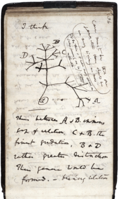

12 네트워크와 트리 (Networks and Trees)

네트워크와 트리는 생물학적 시스템에 대한 지식을 표현하는 데 자주 사용됩니다. 이들은 또한 실험이나 연구로부터 얻은 관측치를 직접 인코딩하는 데 사용될 수도 있습니다. 계통수(Phylogenetic trees)는 종들 사이의 가족 관계 및 유사성 관계를 표현하기 위해 그려졌으며, 심지어 이러한 트리에 기계론적이고 인과적인 해석을 부여한 다윈(Darwin)의 유명한 노트북 스케치 이전부터 존재했습니다. 네트워크에서 노드(nodes)와 에지(edges)의 의미는 다를 수 있으며 명시되어야 합니다. 예를 들어, 네트워크는 그림 10.1에서와 같이 단백질 사이의 관계를 도식화할 수 있는데, 여기서 노드는 유전자나 그들이 인코딩하는 단백질을 나타낼 수 있고, 에지는 직접적인 물리적 상호작용이거나 실험 결과를 나타내는 좀 더 추상적인 “기능적” 또는 “유전적” 상호작용일 수 있습니다. 이 책에서 우리는 그래프(graph) 와 네트워크(network) 라는 용어를 거의 혼용하여 사용합니다. 전자는 수학적 구조를 좀 더 연상시키고, 후자는 생물학적 해석을 좀 더 연상시킵니다.
{kind=link}
그림 10.1: 단백질 사이의 쌍별 관계를 나타내는 작은 단백질-단백질 네트워크.
우리는 2장에서 상태 전이 시퀀스를 마르코프 체인(Markov chain)으로 모델링할 수 있음을 보았는데, 이는 에지에 가중치가 부여된 유향 그래프(directed graphs)로 표현될 수 있습니다. 노드가 화학적 대사산물이고 에지가 화학 반응을 나타내는 대사 경로(metabolic pathways)가 그 예입니다. 암 유전체학에서는 돌연변이의 계보를 나타내기 위해 돌연변이 이력 트리(mutation history trees)가 사용됩니다.
전염 네트워크(transmission networks)는 감염병의 역학을 공부하는 데 중요합니다. 실제 네트워크는 매우 클 수 있으므로, 이를 표현하고 시각화하기 위한 특수한 방법들이 필요할 것입니다.
이 장에서 우리는 다음을 수행할 것입니다:
에지, 정점(vertices), 레이아웃(layout)과 같은 그래프 구성 요소의 공식 정의를 사용하여, 인접 행렬(adjacency matrices)과 에지 리스트(lists of edges)를 모두 이용해 R에서 이들을 조작하는 방법을 살펴봅니다.
igraph 의 그래프 객체를 ggraph 를 사용하여 ggplot2 의 레이어 접근 방식에 따라 시각화할 수 있는 객체로 변환합니다. 그래프의 에지와 노드에 부착하는 공변량(covariates)을 실험해 봅니다.
그래프는 시스템에 대한 사전 지식을 인코딩하는 유용한 방식입니다. 우리는 그래프가 어떻게 단순한 유전자 세트 분석을 넘어, 네트워크 상에 유의성 점수(significance scores)를 매핑하여 섭동 핫스팟(hotspots) 을 탐지함으로써 의미 있는 생물학적 권고사항을 도출할 수 있게 해주는지 살펴볼 것입니다.
DNA 서열로부터 계통수(phylogenetic trees)를 구축하고, 이를 위해 특별히 설계된 R 패키지인 ape 와 ggtree 를 사용하여 시각화합니다.
16S rRNA 마이크로바이옴 데이터로부터 구축된 계통수와 공변량을 결합하여, 분류군(taxa) 간의 계층적 관계가 어떻게 다중 가설 검정의 검정력(power)을 높일 수 있는지 보여줍니다.
최소 신장 트리(minimum spanning tree, MST) 라고 불리는 특수한 트리는 그래프와 다른 공변량 사이의 관계를 테스트하는 데 매우 유용합니다. 프리드먼-라프스키(Friedman-Rafsky) 검정이라 알려진 방법의 서로 다른 버전들을 어떻게 구현하는지 살펴볼 것입니다. 생쥐들 사이의 박테리아 공동 발생과 HIV 전염 네트워크에서의 균주 유사성을 모두 연구할 것입니다.
12.1 10.2 그래프(Graphs)
12.1.1 10.2.1 그래프란 무엇이며 어떻게 인코딩할 수 있는가?
그래프(graph) 는 대개 ((V,E))로 표시되는 두 세트의 조합으로 정의됩니다. 여기서 (V)는 노드(nodes) 또는 정점(vertices) 의 세트이고, (E)는 정점들 사이의 에지(edges) 세트입니다. (E)의 각 원소는 노드 쌍으로 구성됩니다. 즉, (V)의 두 원소입니다. 그래프를 표현하는 직관적인 방식은 출발-도착(from-to) 표현입니다. 정점 세트를 (V=(A,B,C, …))라고 하면, 출발-도착(또는 에지 리스트) 표현은 다음과 같은 형태의 표입니다:
from to
1 A B
2 B C
3 A E
4 C D
5 E F출발-도착 표에서 행의 순서는 아무런 역할을 하지 않습니다. 유향 그래프(directed graph) 또는 지향 그래프(oriented graph) 에서 에지는 순서가 있는 쌍입니다. 즉, 위 표의 첫 번째 줄은 A에서 B로 가는 에지가 있음을 나타내지만, B에서 A로 가는 에지도 있는지는 말해주지 않습니다 – 이는 표의 별도 행에 표시되어야 합니다.
무향 그래프(undirected graph) 에서 에지는 순서가 없는 쌍입니다. 즉, A에서 B로 가는 에지는 B에서 A로 가는 에지와 구분되지 않습니다. 무향 그래프는 노드 사이의 대칭적인 관계를 인코딩하고, 유향 그래프는 비대칭적인 관계를 나타냅니다.
그래프와 그 시각화를 혼동하지 않는 것이 중요합니다. 그림 10.1에서처럼 그래프를 2차원 영역에 그리는 것이 가능하지만, 이는 선택 사항이며 유일하지 않습니다 – 동일한 그래프를 그리는 방식은 항상 여러 가지가 있습니다. 또한 그러한 시각화에서 에지들이 서로 교차하지 않는다는 보장도 없습니다; 그래프에 따라 그런 일이 발생할 수 있습니다. 그래프는 물리적 공간(2D든 3D든)에 살고 있는 것이 아니라, 말 그대로 노드와 에지의 세트일 뿐입니다.
출발-도착 표에 대한 대안적인 표현 방식은 인접 행렬(adjacency matrix) 입니다. 이는 그래프의 노드 수만큼의 행(및 열)을 가진 정사각 행렬입니다. 행렬의 (i)번째 행과 (j)번째 열에 0이 아닌 항목이 있으면 이는 (i)번째 정점과 (j)번째 정점 사이에 에지가 있음을 인코딩합니다.
질문 10.1
무향 그래프의 경우, 인접 행렬 (A)의 어떤 점이 특별한가요?
해결책
인접 행렬은 대칭입니다. 즉, (M = M^T)입니다. 그림 10.2와 10.3에 예시가 나와 있습니다. g1은 아래 코드를 통해 (2열 행렬 edges에 인코딩된) 에지 리스트로부터 생성되었습니다.
library("igraph")
edges = matrix(c(1,3, 2,3, 3,4, 4,5, 4,6), byrow = TRUE, ncol = 2)
g1 = graph_from_edgelist(edges, directed = FALSE)
vertex_attr(g1, name = "name") = 1:6
plot(g1, vertex.size = 25, edge.width = 5, vertex.color = "coral")
그림 10.2: 번호가 매겨진 노드들이 있는 작은 무향 그래프.
{kind=link}
그림 10.3: 그림 10.2에 표시된 그래프의 인접 행렬은 0과 1로 구성된 대칭 (n imes n) 행렬이며, 여기서 (n)은 노드의 수입니다.
질문 10.2
위의 질문 10.1의 답변에 나온 방법 외에, 에지 리스트 데이터 프레임으로부터 그래프를 생성하는 대안적인 방법을 제시할 수 있나요?
해결책
edges = "1,3\n2,3\n3,4\n4,6\n4,5"
df = read.csv(textConnection(edges), header = FALSE)
sg = graph_from_data_frame(df, directed = FALSE)
sg
IGRAPH 1467322 UN-- 6 5 --
+ attr: name (v/c)
+ edges from 1467322 (vertex names):
[1] 1--3 2--3 3--4 4--6 4--5일반적으로는 별도의 파일로부터 에지 리스트 표를 읽기 위해 read.csv 함수를 사용할 것입니다. 여기서는 예제를 더 간결하게 유지하기 위해 문자열 edges를 즉석에서 만들고 textConnection 함수를 사용하여 이를 파일과 동등하게 만들었습니다. 표기법 "\n"은 줄바꿈을 나타냅니다.
12.1.1.1 단순 그래프의 구성 요소들
노드 또는 정점. 이들은 그림 10.2에서 번호가 들어 있는 색칠된 원들입니다.
에지 또는 연결. 노드들을 잇는 세그먼트이며 방향이 있을 수도 있고 없을 수도 있습니다.
에지 속성(에지 길이 등). 별도로 지정되지 않으면 에지 길이는 모두 동일하게 대개 1이라고 가정합니다. 예를 들어, 그래프 상의 두 노드 사이의 거리를 계산하려면 최단 경로를 따라 에지들의 길이를 합산합니다.
에지 및 노드 속성: 선택적으로, 각 에지나 각 노드는 유형, 색상, 가중치, 에지 너비, 노드 크기 등과 같은 추가적인 연속형 또는 범주형 변수들에 매핑될 수 있습니다. 응용 분야와 의도된 계산에 따라 거의 모든 것이 가능합니다.
우리는 또한 에지 길이를 가진 유향 그래프를 네트워크(network) 라고 부릅니다. 네트워크의 인접 행렬은 에지 길이에 대응하는 양수들로 이루어진 (n imes n) 행렬입니다.
12.1.1.2 기본 개념들
노드의 차수(degree) 는 그 노드에 연결된 에지의 수입니다. 유향 그래프에서는 들어오는 에지와 나가는 에지에 대해 진입 차수(in-degree) 와 진출 차수(out-degree) 를 구분합니다. 또한 사이클(cycles)(셀프 루프나 여러 정점을 거치는 루프를 일컫는 공식 용어)을 포함하는 유향 그래프와 그렇지 않은 그래프(순환 및 비순환 그래프라고 함)를 추가로 구분할 수 있습니다.
큰 그래프의 경우, 정점 차수의 분포를 살펴봄으로써 전체적인 그래프 구조를 요약할 수 있으며, 중심성(centrality) 이나 매개 중심성(betweenness) 과 같은 척도들을 사용하여 그래프에서 특히 흥미로운 영역이나 특정 노드 및 에지들을 식별할 수 있습니다. 이러한 척도들은 network , igraph 와 같은 다양한 패키지들에서 사용할 수 있습니다.
만약 에지의 수가 노드의 수와 같은 규모(order of magnitude)라면 ( (#Eope O(#V))라고 씀), 우리는 그 그래프가 희소(sparse) 하다고 말합니다. 일부 그래프는 노드가 매우 많습니다. 예를 들어, ppiData 패키지에는 약 20,000개의 에지를 가진 약 2,500개의 단백질에 대한 예측된 단백질 상호작용(ppipred) 그래프가 들어 있습니다1. 그러한 그래프에 대한 완전한 인접 행렬은 600만 개 이상의 메모리 유닛을 필요로 하며, 그중 대부분은 0을 포함합니다. 이는 불필요한 낭비입니다. 동일한 그래프의 에지 리스트 표현은 더 콤팩트합니다: 에지가 있는 곳에만 저장 공간을 사용하며, 우리 예제에서는 20,000개의 메모리 유닛에 해당합니다. 에지 리스트 표현의 한 가지 구체적인 선택은 Matrix 패키지에 구현된 것과 같은 희소 행렬 인코딩입니다.
1 유전자 및 종 계통수(phylogenies)는 이보다 훨씬 더 클 수도 있습니다.
반면에 조밀한(dense) 그래프에서는 에지의 수가 잠재적인 에지의 수, 즉 노드 수의 제곱 ( (#Eope O(#V^2))라고 씀)과 같은 규모입니다. 크고 조밀한 그래프의 경우 저장 메모리 공간이 문제가 될 수 있습니다.
12.1.1.3 그래프 레이아웃
우리는 미학적 또는 실무적인 이유로 동일한 그래프가 서로 다른 방식으로 그려지는 여러 예시를 보게 될 것입니다. 이는 그래프 레이아웃 의 선택을 통해 이루어집니다.
에지가 거리를 나타내는 길이를 가질 때, 그래프의 2D 표현 문제는 9장에서 보았던 다차원 척도법과 동일합니다. 이는 종종 정점 지점들을 가능한 한 멀리 퍼뜨림으로써 유사한 방식으로 해결됩니다. 길이가 없는 에지의 단순한 경우, 알고리듬은 서로 다른 기준을 선택할 수 있습니다. 프루히터만-라잉골드(Fruchterman and Reingold) 방법이 기본적인 선택입니다. 이는 마치 (뉴턴의) 물리적 힘의 영향을 받는 것처럼 유사한 점들이 서로 끌어당기고 밀어내는 물리 기반 모델에 기초합니다.
태스크
igraph 패키지를 사용하여 다음을 수행하세요:
12개의 노드와 50개 이상의 에지를 가진 조밀한 무작위 그래프를 만듭니다.
서로 다른 레이아웃으로 그래프를 그리는 실험을 해보세요: 노드들을 원형으로 배치하거나, 그래프를 가능한 한 대칭적으로 표현하고 노드나 에지가 겹치지 않게 해보세요.
12.1.1.4 데이터로부터의 그래프
대개 데이터는 그래프 형태로 도착하지 않습니다. 그래픽이나 네트워크 표현은 종종 다른 데이터 유형으로부터 변환된 결과입니다.
거리나 유사성으로부터: 그래프는 거리나 유사성 관계를 이진화(binarising)함으로써 이를 단순화할 수 있습니다. 노드들이 비슷하거나 가까우면 연결하고, 그렇지 않으면 연결하지 않습니다. 따라서 입력값은 관심 있는 모든 객체 쌍 (유전자, 단백질, 종, 표현형, …) 사이의 유사성 또는 거리 척도 세트이며, 여기에 임계값(threshold)이 적용됩니다. 척도 세트는 조밀한 행렬로 구현되거나 즉석에서 계산될 수 있습니다.
이분 그래프 (Bipartite graphs): 일부 데이터는 갈라파고스 제도의 핀치새 종과 섬들(그림 10.4), 또는 전사 인자와 그들이 결합하는 것으로 간주되는 유전자 조절 영역 사이의 관계처럼 두 가지 유형의 객체 사이의 존재 또는 부재 관계로 자연스럽게 나타납니다. 그러한 관계는 직사각형 행렬에서 0/1 값으로 인코딩될 수 있으며, 여기서 행은 한 객체 유형을 나타내고 열은 다른 유형을 나타냅니다. 결과로 나오는 그래프는 두 가지 유형의 노드(예: 핀치새 노드와 섬 노드)를 가지며, 에지는 서로 다른 유형의 노드 사이에만 존재할 수 있습니다 (예: 분류군과 섬 사이에는 존재하지만 분류군 사이나 섬 사이에는 존재하지 않음). 그림 10.4의 에지는 ~에 산다 는 관계를 나타냅니다.

그림 10.4: 이 이분(bipartite) 그래프는 각 분류군을 그것이 관찰된 사이트들과 연결합니다.
질문 10.3
finch.csv 데이터를 불러오고, 이것이 이분 네트워크를 나타냄을 강조하도록 그리는 실험을 해보세요.
해결책
다음 코드의 출력은 그림 10.5에 나와 있습니다.
finch = readr::read_csv("../data/finch.csv", comment = "#", col_types = "cc")
finch
# A tibble: 122 × 2
.tail .head
<chr> <chr>
1 C Large ground finch
2 D Large ground finch
3 E Large ground finch
4 F Large ground finch
5 G Large ground finch
6 H Large ground finch
7 I Large ground finch
8 J Large ground finch
9 L Large ground finch
10 M Large ground finch
# ℹ 112 more rows
library("network")
finch.nw = as.network(finch, bipartite = TRUE, directed = FALSE)
is.island = nchar(network.vertex.names(finch.nw)) == 1
plot(finch.nw, vertex.cex = 2.5, displaylabels = TRUE,
vertex.col = ifelse(is.island, "forestgreen", "gold3"),
label= sub(" finch", "", network.vertex.names(finch.nw)))
finch.nw |> as.matrix() |> t() |> (\(x) x[, order(colnames(x))])()
A B C D E F G H I J K L M N O P Q
Large ground finch 0 0 1 1 1 1 1 1 1 1 0 1 1 1 1 1 1
Medium ground finch 1 1 1 1 1 1 1 1 1 1 0 1 0 1 1 0 0
Small ground finch 1 1 1 1 1 1 1 1 1 1 1 1 0 1 1 0 0
Sharp-beaked ground finch 0 0 1 1 1 0 0 1 0 1 0 1 1 0 1 1 1
Cactus ground finch 1 1 1 0 1 1 1 1 1 1 0 1 0 1 1 0 0
Large cactus ground finch 0 0 0 0 0 0 0 0 0 0 1 0 1 0 0 0 0
Large tree finch 0 0 1 1 1 1 1 1 1 0 0 1 0 1 1 0 0
Medium tree finch 0 0 0 0 0 0 0 0 0 0 0 1 0 0 0 0 0
Small tree finch 0 0 1 1 1 1 1 1 1 1 0 1 0 0 1 0 0
Vegetarian finch 0 0 1 1 1 1 1 1 1 1 0 1 0 1 1 0 0
Woodpecker finch 0 0 1 1 1 0 1 1 0 1 0 0 0 0 0 0 0
Mangrove finch 0 0 1 1 0 0 0 0 0 0 0 0 0 0 0 0 0
Warbler finch 1 1 1 1 1 1 1 1 1 1 1 1 1 1 1 1 1
그림 10.5: finches 그래프. 이분 그래프의 특성을 더 잘 고려하도록 레이아웃을 개선하는 방법이 많이 있습니다.
질문 10.4
ggraph 패키지를 사용하여 그래프 g1의 플롯을 만드세요. 레이아웃과 geom_edge_link, geom_node_point, geom_node_text와 같은 제공된 geom들을 선택하세요.
해결책
다음 코드의 출력은 그림 10.6에 나와 있습니다.
library("ggraph")
ggraph(g1, layout = "nicely") +
geom_edge_link() +
geom_node_point(size=6,color="#8856a7") +
geom_node_text(label=vertex_attr(g1)$name, color="white")
그림 10.6: ggraph 예시.
12.1.1.5 예시: 4개 상태 마르코프 체인
2장에서 우리는 마르코프 체인이 어떻게 뉴클레오타이드(시스템의 상태로 간주됨) 간의 전이를 요약할 수 있는지 보았습니다. 이는 종종 그래프로 도식화됩니다. igraph 패키지는 그래프 “장식”을 위한 많은 선택지를 제공합니다:
library("markovchain")
statesNames = c("A", "C", "G","T")
T1MC = new("markovchain", states = statesNames, transitionMatrix =
matrix(c(0.2,0.1,0.4,0.3,0,1,0,0,0.1,0.2,0.2,0.5,0.1,0.1,0.8,0.0),
nrow = 4,byrow = TRUE, dimnames = list(statesNames, statesNames)))
plot(T1MC, edge.arrow.size = 0.4, vertex.color = "purple",
edge.arrow.width = 2.2, edge.width = 5, edge.color = "blue",
edge.curved = TRUE, edge.label.cex = 2.5, vertex.size= 32,
vertex.label.cex = 3.5, edge.loop.angle = 3,
vertex.label.family = "sans", vertex.label.color = "white")
그림 10.7: 상태 간의 가능한 전이를 나타내는 화살표가 있는 4개 상태 마르코프 체인.
마르코프 체인은 동역학 시스템의 단순한 모델이며, 상태는 그래프의 노드로 표현됩니다. 전이 행렬은 상태 간의 유향 에지(화살표)에 대한 가중치를 제공합니다.
질문 10.5
이 마르코프 체인은 어떤 상태로 끝날 것이라고 생각하시나요?
해결책
C를 제외한 모든 노드는 나가는 에지(outgoing edges)를 가지고 있으며, C는 들어오는 에지와 자기 자신으로 향하는 에지만을 가집니다. 따라서 C는 흡수 상태(absorbing state)입니다. 이 체인의 모든 프로세스는 조만간 C에 도달하여 머물게 됩니다.
태스크
set.seed함수의 입력값을 바꾸어 보고 플롯이 변하는지 확인해 보세요.이 특정
plot함수에 대한 도움말에 접속해 보세요.그래프를 다시 그리고, 전이 확률(transition probabilities) 레이블은 녹색으로, 정점(vertices)은 갈색으로 표시해 보세요.
연습 문제 10.3에서 어노테이션이 달린 상태 공간 마르코프 체인 그래프의 완전한 예시를 구축하는 방법을 살펴볼 것입니다.
12.1.2 10.2.2 여러 레이어가 있는 그래프: 에지와 노드의 레이블
여기에 정점에 어노테이션이 달린, STRING 데이터베이스에서 다운로드한 그래프를 그리는 예시가 있습니다.
datf = read.table("../data/string_graph.txt", header = TRUE)
grs = graph_from_data_frame(datf[, c("node1", "node2")], directed = FALSE)
E(grs)$weight = 1
V(grs)$size = centr_degree(grs)$res
ggraph(grs) +
geom_edge_arc(color = "black", strength = 0.05, alpha = 0.8)+
geom_node_point(size = 2.5, alpha = 0.5, color = "orange") +
geom_node_label(aes(label=vertex_attr(grs)$name), size = 3, alpha = 0.9, color = "#8856a7", repel = TRUE)과 유사한 구조에 주목하세요.")
그림 10.8: Yu 등 (2012)에서 정렬된 T 세포의 차등 유전자 발현 패턴을 사용하여 발견된 섭동된 케모카인 하위 네트워크. 오른쪽 모서리에 있는 CXCR3, CXCL13, CCL19, CSCR5 및 CCR7 유전자의 클릭(clique)과 유사한 구조에 주목하세요.
그림 10.8은 (Nacu et al. 2007)에서 GXNA를 사용하여 유방암 전이 연구에서 발견되고 Yu 등 (2012)에 의해 보고된 전체 섭동 케모카인 하위 네트워크를 보여줍니다.
12.2 10.3 유전자 세트 농축에서 네트워크로

차등 발현될 가능성이 있는 유전자들의 길고 구조화되지 않은 세탁물 리스트(laundry list)는 위협적일 수 있습니다.
8장에서 우리는 차등 발현된 유전자 리스트를 찾는 방법들을 공부했습니다. 적은 표본 크기와 낮은 FDR을 유지하려는 노력은 종종 차등 발현을 감지하는 낮은 검정력으로 이어집니다. 따라서 차등 발현된 것으로 자신 있게 선언할 수 있는 긴 유전자 리스트를 얻는 것은 초기에는 승리입니다. 그러나 기저의 생물학을 이해하려면 생물학적 시스템에서 유의미한 행위자들의 단순한 리스트 이상의 것이 필요합니다.
12.2.1 10.3.1 사전 정의된 유전자 세트를 사용하는 방법 (GSEA)
가장 초기 접근 방식 중 하나는 유의미한 유전자 리스트에서 과다하게 나타나거나(overrepresented) 농축된(enriched) 유전자 속성들을 찾는 것이었습니다. 이러한 유전자 클래스들은 종종 유전자 온톨로지(Gene Ontology, GO) 범주에 기반합니다 (예: 기관 성장에 관여하는 유전자, 또는 섭식 행동에 관여하는 유전자). 유전자 온톨로지(GO)는 유전자와 유전자 산물을 설명하는 세 가지 온톨로지의 모음입니다. 이러한 온톨로지들은 유향 비순환 그래프(DAGS) 구조를 가진 제한된 어휘들입니다. 가장 구체적인 용어들이 그래프의 잎(leaves)이 됩니다. GO 그래프는 노드(여기서는 유전자 온톨로지 용어)와 더 구체적인 용어(자식)에서 덜 구체적인 용어(부모)로 가는 에지들로 구성되며, 흔히 이러한 에지들은 방향성이 있습니다. 노드와 에지는 시각화될 수 있는 여러 속성을 가질 수 있습니다. 실험에서 유의미한 것으로 지정된 특정 유전자 세트에 대해 GO 어노테이션을 사용하는 주된 목적은 이 리스트에서 특정 GO 용어의 농축(enrichment) 을 찾는 것이며, 우리는 아래에서 이 용어에 통계적 의미를 부여할 것입니다. 다른 많은 유용한 중요 유전자 세트 리스트들이 존재합니다.
태스크
유용한 유전자 세트 데이터베이스를 찾아보세요.
예를 들어, MsigDB 분자 시그니처 데이터베이스 (Liberzon et al. 2011)에는 많은 유전자 세트가 포함되어 있으며, 이는 바이오컨덕터 패키지 GSEABase 의 getBroadSets 함수를 사용하여 R 내부에서 대략 다음과 같이 접근할 수 있습니다:
library("GSEABase")
## 웹사이트 로그인이 필요합니다.
fl = "/path/to/msigdb_v5.1.xml"
gss = getBroadSets(fl)
organism(gss[[1]])
table(sapply(gss, organism))12.2.2 10.3.2 2원 분할표 검정을 이용한 유전자 세트 분석
표 10.1: 유의미한 세트에서 각 범주의 유전자 수가 동일하더라도, 아래의 시뮬레이션과 2원 분할표(two-way tables)의 검정 이론은 모두 파란색 범주가 농축되었음을 보여줍니다.
| 노란색 | 파란색 | 빨간색 | |
|---|---|---|---|
| 유의미함 | 25 | 25 | 25 |
| 전체 (Universe) | 500 | 100 | 400 |
여기서는 흔히 피셔의 정확 검정(Fisher’s “exact” test) 또는 초기하 검정(hypergeometric test) 이라 불리는 기본적인 접근 방식을 설명하는 것부터 시작해 보겠습니다.
소위 ‘정확(exact)’ 검정이라고 불리는 이유는 비모수적이며 전수 조사(exhaustive enumerations)에 기반하기 때문이지, 답이 확실하기 때문은 아닙니다. 결국 이것은 통계학이니까요.
잠재적으로 유의미할 수 있는 후보 유전자들의 전체 집합(universe)을 정의하십시오; 이 유니버스의 크기를 (N)이라고 합시다. 우리는 또한 실제로 유의미하게 나타난 유전자들의 기록을 가지고 있는데, 그 수가 (m)개라고 가정해 봅시다.
우리는 유전자 유니버스에서 식별된 유전자들에 대응하는 총 (N)개의 공이 상자 안에 들어 있는 장난감 모델을 만듭니다. 이 유전자들은 서로 다른 기능적 범주로 나뉘어 있습니다. (N=1,000)개의 유전자가 있고 그중 500개는 노란색, 100개는 파란색, 400개는 빨간색이라고 가정해 봅시다. 그런 다음 (m=75)개의 유전자 하위 집합에 유의미함(significant) 이라는 레이블이 붙습니다. 이 유의미하게 흥미로운 유전자들 중에 노란색 25개, 빨간색 25개, 파란색 25개가 있다고 가정합시다. 파란색 범주가 농축되었거나 과다하게 나타났다고 할 수 있을까요?
우리는 일부 범주는 매우 수가 많고 다른 범주는 드물다는 사실을 고려하기 위해 이 초기하 2원 분할표 검정을 사용합니다.
질문 10.6
20,000번의 시뮬레이션을 통해 몬테카를로 실험을 실행하고, 유의미한 세트에서 어떤 범주도 과다하게 나타나지 않는다는 귀무 가설하에서 파란색이 25개일 때의 유의성 p-값을 계산하세요.
해결책
귀무 가설하에서 75개는 다음과 같이 우리의 균등하지 않은 상자들로부터 무작위로 샘플링됩니다:
universe = c(rep(“Yellow”, 500), rep(“Blue”, 100), rep(“Red”, 400)) countblue = replicate(20000, { pick75 = sample(universe, 75, replace = FALSE) sum(pick75 == “Blue”) }) summary(countblue)
Min. 1st Qu. Median Mean 3rd Qu. Max.
0.000 6.000 7.000 7.496 9.000 20.000 그림 10.9의 히스토그램은 귀무 모델하에서 25만큼 큰 값을 갖는 것이 매우 드물 것임을 보여줍니다.

그림 10.9: 20,000번의 시뮬레이션에서도 파란색 카운트가 25에 근접하는 경우가 없음을 볼 수 있습니다. 우리는 그러한 사건이 우연히 일어났을 가능성을 기각하고 파란색이 농축되었다 고 결론 내릴 수 있습니다.
일반적인 경우, 유전자 유니버스는 (N)개의 공이 들어 있는 항아리이며, 만약 우리가 (m)개의 공을 무작위로 뽑고 파란색 공의 비율이 (k/N)이라면, (k)개 크기의 추출에서 (km/N)개의 파란색 공을 볼 것으로 기대합니다.
12.2.2.1 GOplot 을 이용한 유전자 농축 네트워크 플로팅
여기서는 유전자 기능 범주와 유의미한 유전자 세트 사이의 연결을 요약하는 매력적인 방법을 보여줍니다.
library("GOplot")
data("EC")
circ = circle_dat(EC$david, EC$genelist)
chord = chord_dat(circ, EC$genes, EC$process)
GOChord(chord, limit = c(0, 5))
그림 10.10: 이 그래프는 두 가지 정상 상태 조직(뇌와 심장, Nolan 등 (2013) 참조)의 내피 세포에서의 차등 발현 연구에서 GO 용어와 유의미하게 변한 유전자 사이의 대응 관계를 보여줍니다. 정규화 후 차등 발현 분석이 수행되어 유전자 리스트를 얻었습니다. 그 다음 GOplot 패키지를 사용하여 차등 발현된 유전자 세트 (조정된 p-값 < 0.05)에 대한 유전자 어노테이션 농축 분석을 수행했습니다.
사실, 유전자 온톨로지 그래프는 서로 다른 프로세스의 유전자들이 종종 생산적으로 상호작용하기 때문에 의미 있는 유전자 상호작용 을 반드시 캡처하는 것은 아닙니다. 많은 양의 정보가 사용되지 않은 채로 남아 있는데, 예를 들어 모든 유의미한 유전자는 p-값의 잠재적으로 큰 변동에도 불구하고 보통 동일한 가중치가 부여됩니다.
12.2.3 10.3.3 유의미한 하위 그래프 및 고득점 모듈
우리는 유전자 온톨로지 이상의 것을 마음대로 사용할 수 있습니다. 유전자 네트워크의 다양한 데이터베이스가 있으며, 그중에서 우리의 차등 발현 실험에서 얻은 p-값과 같은 유의성 점수들을 투영할 알려진 골격(skeleton) 그래프를 선택할 수 있습니다. 우리는 Ideker 등 (2002)이 처음 제안한 아이디어를 따를 것입니다. 이는 Nacu 등 (2007)에서 더 발전되었습니다. 많은 개선 사항이 포함된 세심한 구현체는 바이오컨덕터 패키지 BioNet (Beisser et al. 2010)으로 제공됩니다. 이러한 방법들은 모두 점수가 매겨진 골격 네트워크에서 특히 섭동된(perturbed) 것으로 보이는 하위 그래프나 모듈을 검색합니다.
네트워크의 각 유전자 노드에는 t-통계량이나 p-값으로부터 계산된 점수가 할당됩니다. 종종 경로는 상향 조절된 유전자와 하향 조절된 유전자를 모두 포함하는데, Ideker 등 (2002)에서 지적했듯이, 이는 검정 통계량의 절댓값을 취하거나 p-값으로부터 계산된 점수를 통합함으로써 캡처될 수 있습니다2. Beisser 등 (2010)은 6장에서 했던 것처럼 유전자의 p-값을 모델링합니다: p-값이 균등하게 분포할 섭동되지 않은 유전자와, 섭동된 유전자로부터 나온 균등하지 않게 분포된 p-값의 혼합물입니다. 우리는 Pounds와 Morris (2003)를 따라 p-값에 대해 베타 분포를 사용하여 데이터의 신호를 모델링합니다.
2 작은 p-값이 큰 점수를 주도록 (-p)와 같은 것이 필요할 것입니다.
노드 점수 함수가 주어지면, 그래프에서 연결된 핫스팟, 즉 높은 결합 점수를 가진 유전자들의 하위 그래프를 검색합니다.
12.2.3.1 하위 그래프 검색 알고리즘 사용하기
일반적인 그래프의 최대 점수 하위 그래프를 찾는 것은 일반적으로 다루기 힘든(intractable) 것으로 알려져 있으므로 (NP-어렵 문제라고 함), 다양한 근사 알고리즘들이 제안되었습니다. Ideker 등 (2002)은 시뮬레이티드 어닐링(simulated annealing) 사용을 제안했지만, 이는 속도가 느리고 해석하기 어려운 큰 하위 그래프를 생성하는 경향이 있습니다. Nacu 등 (2007)은 시드(seed) 정점에서 시작하여 그 주변을 점진적으로 확장했습니다. Beisser 등 (2010)은 소위 최소 신장 트리(MST)를 사용하여 검색을 시작했는데, 이 그래프는 이 장의 뒷부분에서 공부할 것입니다.
12.2.4 10.3.4 BioNet 구현 예시
방법을 설명하기 위해 BioNet 패키지의 데이터를 보여줍니다.
interactome 데이터는 9,386개의 노드와 36,504개의 상호작용으로 구성된 네트워크를 포함합니다. 이것이 우리가 작업할 골격 그래프를 구성합니다 (Beisser et al. (2010) 참조).
dataLym은 관련 p-값과 (t) 통계량을 포함하며, 다음과 같이 액세스하여 분석을 수행할 수 있습니다:
library("BioNet")
library("DLBCL")
data("dataLym")
data("interactome")
interactome
A graphNEL graph with undirected edges
Number of Nodes = 9386
Number of Edges = 36504
pval = dataLym$t.pval
names(pval) = dataLym$label
subnet = subNetwork(dataLym$label, interactome)
subnet = rmSelfLoops(subnet)
subnet
A graphNEL graph with undirected edges
Number of Nodes = 2559
Number of Edges = 7788 12.2.4.1 베타-균등 모델 적합시키기 (Fit a Beta-Uniform model)
p-값은 4장에서 공부한 혼합 모델 유형으로 적합됩니다. 여기에는 확률 (_0)을 갖는 귀무 가설의 균등 성분과 대립 가설에 해당하는 p-값에 대한 베타 분포 ( (a x^{a - 1})에 비례)가 포함됩니다 (Pounds and Morris 2003). [f(x|a,π_0)= π_0 + (1-π_0) a x^{a - 1}\qquad 0 <x ≤ 1; ; 0<a<1] FDR을 0.001로 설정하여 모델을 실행합니다:
패키지는 실제로 (_0)에 다른 이름을 부여합니다: ()를 사용하고 이를 혼합 매개변수(mixing parameter)라고 부릅니다.
fb = fitBumModel(pval, plot = FALSE)
fb
Beta-Uniform-Mixture (BUM) model
3583 pvalues fitted
Mixture parameter (lambda): 0.482
shape parameter (a): 0.180
log-likelihood: 4471.8
scores=scoreNodes(subnet, fb, fdr = 0.001)
그림 10.11: qqplot은 데이터에 대한 베타-균등 혼합 모델 적합의 품질을 보여줍니다. 빨간색 점은 베타 분포의 이론적 분위수를 (x) 좌표로, 관측된 분위수를 (y) 좌표로 가집니다. 파란색 선은 이 모델이 잘 들어맞음을 보여줍니다.

그림 10.12: p-값에 대한 혼합 성분의 히스토그램입니다. 베타 분포는 빨간색, 균등 분포는 파란색으로 표시됩니다. (_0)는 분포가 균등해야 하는 귀무 성분에 할당된 혼합 비율입니다.
그다음 다음을 사용하여 고득점 하위 그래프에 대한 휴리스틱 검색을 실행합니다:
hotSub = runFastHeinz(subnet, scores) hotSub
A graphNEL graph with undirected edges Number of Nodes = 144 Number of Edges = 221
logFC=dataLym$diff
names(logFC)=dataLym$label질문 10.7
다음 코드를 사용하여 그림 10.13을 만들었습니다:
plotModule(hotSub, layout = layout.davidson.harel, scores = scores,
diff.expr = logFC)
그림 10.13: ABC와 GCB B세포 림프종 사이의 차등 발현에 대해 최대로 농축된 것으로 찾아진 하위 그래프입니다. 노드는 빨간색과 초록색으로 칠해져 있습니다: 초록색은 ACB에서의 상향 조절을, 빨간색은 GBC에서의 상향 조절을 나타냅니다. 노드의 모양은 점수를 나타냅니다: 직사각형은 음수 점수를, 원은 양수 점수를 나타냅니다.
igraph.from.graphNEL 함수를 사용하여 모듈 객체를 변환하고 10.2.2절에 표시된 ggraph 방법을 사용하여 플로팅하세요.
12.3 10.4 계통수 (Phylogenetic Trees)

그림 10.14: 수학적 객체로서, 계층적 클러스터링 트리(5장에서 연구됨)는 계통수와 동일합니다. 이들은 팁에 레이블이 있는 뿌리가 있는 이진(rooted binary) 트리입니다.
생물학에서 그래프의 정말 중요한 용도 중 하나는 계통수를 구축하는 것입니다. 트리는 사이클(cycles) (셀프 루프나 여러 정점을 거치는 루프를 일컫는 공식 용어)이 없는 그래프입니다. 계통수는 보통 팁에 있는 현대의3 분류군(taxa)에 해당하는 잎(leaves)에만 레이블이 있는 뿌리가 있는 이진 트리입니다. 내부 노드는 팁에 있는 현대(contemporaneous) 데이터로부터 추론되어야 하는 조상(ancestral) 서열에 해당합니다. 많은 방법들이 서로 다른 종이나 집단에서 얻은 정렬된 DNA 서열을 사용하여 트리를 추론하거나 추정합니다. 트리의 팁은 보통 OTU(Operational Taxonomic Units)라고 불립니다. 이러한 분석에서 관심 있는 통계적 매개변수(parameter) 는 잎에 OTU 레이블이 있는 뿌리가 있는 이진 트리입니다 (자세한 내용은 Holmes (1999, 2003b)를 참조하세요).
3 현대적이기 때문에, 트리는 종종 잎들이 모두 뿌리에서 같은 거리에 있도록 표현됩니다.
12.3.0.1 HIV의 예

그림 10.15: 이 계통수는 아프리카에서의 서로 다른 HIV/SIV 균주의 역사를 설명합니다 (Wertheim and Worobey 2009), [그림 출처].
HIV는 매우 빠르게 진화함으로써 (수개월 내에 여러 돌연변이가 나타날 수 있음) 스스로를 보호하는 바이러스입니다. 따라서 그 진화는 실시간으로 추적될 수 있는 반면, 대형 유기체의 진화는 수백만 년에 걸쳐 일어났습니다. HIV 트리는 약물 내성 탐지 및 이해와 같은 의료 목적으로 구축됩니다. 이들은 개별 유전자에 대해 추정됩니다. 서로 다른 유전자는 진화 역사에서 차이를 보일 수 있으며 따라서 서로 다른 유전자 트리(gene trees) 를 생성할 수 있습니다. 그림 10.15의 계통수는 바이러스가 원숭이에서 인간으로 옮겨간 시기를 보여줍니다 (Wertheim and Worobey 2009).
12.3.0.2 계통수의 특별한 요소들
대부분의 계통수는 뿌리가 있는 것으로 표시되며,
뿌리(root)는 나중에 보게 되겠지만 보통 트리의 팁에 외집단(outgroup)을 포함시킴으로써 찾아집니다.이 공통 조상으로부터 유래된 형질을 상동(homologous) 이라고 합니다 (집단 유전학자들은 상동이라는 용어 대신 가계에 의한 동일성(identity by descent, IBD)으로 대체하기도 합니다).
공통 조상에 의해 정의된 트리의 자매들을 분기군(clades) 또는 단계통군(monophyletic groups) 이라고 하며, 이들은 단순한 유사성 이상의 공통점을 가집니다.
12.3.1 10.4.1 진화를 위한 마르코프 모델
우리는 그림 10.7에서 본 [A, C, G, T] 상태에 대한 마르코프 체인을 사용할 것입니다. 하지만 이제는 상태의 변화, 즉 돌연변이가 무작위 시간에 발생한다고 가정합니다. 이러한 돌연변이 사건 사이의 간격은 지수 분포를 따를 것입니다. 이러한 연속 시간 마르코프 체인은 다음과 같은 속성들을 가집니다:
기억 없음 (No Memory). (P(Y(u+t)=j|Y(t)=i))는 (t) 이전의 시간에 의존하지 않습니다.
시간 동질성 (Time homogeneity). 확률 (P(Y(h+t)=j|Y(t)=i))는 (t)에 의존하지 않고, 사건 사이의 시간인 (h)와 (i) 및 (j)에 의존합니다.
선형성 (Linearity). 순간 전이율은 대략 선형 형태입니다.
여기서 (o(h))라고 쓴 오차항을 사용합니다. 이것은 ’리틀 o 오브 h’라고 읽으며, 이 오차항이 (h)보다 훨씬 느리게 (즉, 하위 선형으로) 커진다는 것을 의미합니다.
[ \[\begin{align} P_{ij}(h)&=q_{ij}h+o(h), \quad\text{for }j\neq i\\ P_{ii}(h)&=1-q_i(h)+ o(h), \qquad\text{where }q_i=\sum_{j\neq i}q_{ij}. \end{align}\] ]
(q_{ij})는 순간 전이율(instantaneous transition rate) 로 알려져 있습니다. 이러한 비율들은 표 10.2와 같은 행렬을 정의합니다.
표 10.2: 두 가지 전이율 행렬의 예입니다. 왼쪽은 Jukes-Cantor(JC69) 모델이고, 오른쪽은 Kimura(K80) 2-매개변수 모델을 보여줍니다.
| (Q = \begin{array}{lcccc} & A & T & C & G \ A & -3& & & \ T & & -3& & \ C & & & -3& \ G & & & & -3\end{array}) | (Q = \begin{array}{lcccc} & A & T & C & G \ A & - & & & \ T & & - & & \ C & & & - & \ G & & & & - \end{array}) |
|---|
생성기(generator) 라고 불리는 순간 변화 확률 행렬입니다. 가장 단순한 모델인 Jukes-Cantor 모델에서는 모든 돌연변이가 발생할 가능성이 동일합니다 (표 10.2의 왼쪽 참조). 좀 더 유연한 모델인 Kimura 모델은 표 10.2의 오른쪽에 나와 있습니다.
질문 10.8
왜 Kimura 모델이 더 유연하다고 말할까요?
해결책
Jukes-Cantor 모델은 하나의 매개변수만을 가지며, 모든 전이(transitions)와 트랜스버전(transversions)이 발생할 가능성이 동일하다고 가정합니다. Kimura 모델에는 전이와 트랜스버전(퓨린 내에서 혹은 피리미딘 내에서 발생하는 돌연변이 대 퓨린에서 피리미딘으로 또는 그 반대로 발생하는 돌연변이)에 대해 각각 하나씩 매개변수가 있습니다.
가장 유연한 모델은 일반화된 시간 가역적 (Generalized Time Reversible, GTR) 모델이라고 하며, 6개의 자유 매개변수를 가집니다. 우리는 알려진 트리로부터 이러한 생성 모델에 따라 시뮬레이션된 데이터의 예를 보여줄 것입니다.
12.3.2 10.4.2 데이터 시뮬레이션 및 트리 플로팅
우리가 이미 계통수를 알고 있고 이 트리를 따른 뉴클레오타이드의 진화를 시뮬레이션하고 싶다고 가정해 봅시다. 먼저 관련 패키지들을 로드하고 ggtree를 사용하여 트리 tree1을 시각화합니다:
library("phangorn")
library("ggtree")
load(file.path("../data/tree1.RData"))태스크
ggtree 함수를 사용하여 tree1을 플롯하세요. 트리의 팁(tips)은 초록색 삼각형으로, 조상 노드들은 빨간색 원으로 만드세요.
ggtree(tree1, lwd = 2, color = “darkgreen”, alpha = 0.8, right = TRUE) + geom_tiplab(size = 7, angle = 90, offset = 0.05) + geom_point(aes(shape = isTip, color = isTip), size = 5, alpha = 0.6)

그림 10.16: 이것은 우리가 실제 매개변수로 사용하는 트리입니다. 우리는 뿌리(root)에서 하나씩 뉴클레오타이드를 생성하여 트리를 따라 “떨어뜨립니다”. 에지 길이에 비례하는 확률로 브랜치를 따라 돌연변이가 발생합니다.
이제 우리의 트리로부터 몇 가지 서열을 생성합니다. 각 서열은 뿌리에서 무작위로 생성된 새로운 뉴클레오타이드 문자로 시작하며, 트리를 따라 내려가면서 돌연변이가 발생할 수 있습니다. 그림 10.17에서 색상들이 균등하게 나타나지 않는 것을 볼 수 있는데, 이는 뿌리에서의 빈도가 균등하지 않게 선택되었기 때문입니다. 아래 코드를 참조하세요.
seqs6 = simSeq(tree1, l = 60, type = "DNA", bf = c(1, 1, 3, 3)/8, rate = 0.1)
seqs6
6 sequences with 60 character and 30 different site patterns.
The states are a c g t
mat6df = data.frame(as.character(seqs6))
p = ggtree(tree1, lwd = 1.2) + geom_tiplab(aes(x = branch), size = 5, vjust = 2)
gheatmap(p, mat6df[, 1:60], offset = 0.01, colnames = FALSE)
그림 10.17: 왼쪽의 트리는 Jukes-Cantor 모델에 따라 오른쪽의 서열들을 생성하는 데 사용되었습니다. 뿌리에서 생성된 뉴클레오타이드 빈도는 꽤 균등하지 않았으며, A와 C가 더 드물게 생성되었습니다. 서열이 트리를 따라 스며들면서 돌연변이가 발생하며, 이는 긴 브랜치에서 발생할 가능성이 더 높습니다.
질문 10.9
위의 코드로 실험해 보세요. 돌연변이가 더 잘 발생하도록 simSeq 함수의 bf 및 rate 인수를 변경해 보세요. 매우 높은 돌연변이율로 생성된 서열들이 그것들을 생성한 트리를 추론하는 것을 더 쉽게 만들 것이라고 생각하시나요?
해결책
매우 높은 돌연변이율은 돌연변이가 스스로를 덮어쓰게 만들어 추론을 더 어렵게 만듭니다. 물론, 브랜치를 해상(resolve)하기 위해 어느 정도의 돌연변이는 발생해야 하므로 적정 수준이 존재합니다. 특정 시간과 일정 횟수의 돌연변이가 발생한 후에는 뿌리에서 무슨 일이 일어났는지 말하기가 매우 어려울 수 있습니다. 자세한 내용은 Mossel (2003)을 참조하세요.
질문 10.10
추정 편향: 거리 과소추정.
1) 만약 우리가 단순한 해밍 거리를 사용하여 두 서열 사이의 변화 횟수만을 센다면, 두 서열 사이에 많은 진화적 변화가 있었을 때 왜 서열 간의 거리를 과소추정하게 될까요?
2) 진화적 거리가 작을 때 편향이 더 커질까요?
위에서 본 진화의 표준 마르코프 모델들은 이러한 추정치들을 개선할 수 있게 해줍니다.
12.3.3 10.4.3 계통수 추정

“이러한 종류의 문제를 해결할 때 가장 중요한 것은 거꾸로 추론할 수 있는 능력입니다. 이는 매우 유용한 성취이며 매우 쉬운 일이지만, 사람들은 이를 많이 연습하지 않습니다. 일상생활의 업무에서는 앞으로 추론하는 것이 더 유용하므로 다른 쪽은 무시되기 마련입니다. 종합적으로 추론할 수 있는 사람이 50명이라면 분석적으로 추론할 수 있는 사람은 한 명뿐입니다.”
셜록 홈즈
실제 트리-매개변수가 알려져 있을 때, 위에서 언급한 진화의 확률적 생성 모델은 서열에서 어떤 패턴을 예상해야 할지 알려줍니다. 이전 장들에서 보았듯이, 통계학이란 데이터로부터 매개변수의 합리적인 추정치로 되돌아가는 것을 의미합니다. 여기서 트리 그 자체와 브랜치 에지 길이, 심지어 진화율조차 매개변수로 간주될 수 있습니다.

그림 10.18: 스타이너 트리(Steiner tree), 내부 점들은 사각형으로 표시됩니다. 외부 점 1, 2, 5, 6을 모두 통과하는 가장 짧은 트리를 만드는 방법은 내부의 (“조상”) 점 3과 4를 만드는 것입니다.
추정에는 여러 접근 방식이 있습니다: 트리 ’구축’도 예외는 아니며, 주요 방식들은 다음과 같습니다:
비모수적 추정: 파시모니 트리(parsimony tree) 파시모니(Parsimony)는 데이터를 설명하는 데 필요한 변화의 횟수를 최소화하는 비모수적 방법이며, 그 해결책은 스타이너 트리(Steiner tree) 문제의 해결책과 동일합니다 (그림 10.18 참조).
모수적 추정: 최대 우도 트리(maximum likelihood tree) 최대 우도나 베이지안 접근법을 사용하여 트리를 추정하려면, 돌연변이율과 브랜치 에지 길이를 통합하는 분자 진화 모델이 필요합니다. ML 추정(예: Phyml, FastML, RaxML)은 모델 가정하에서 트리의 우도를 최대화하기 위해 효율적인 최적화 알고리즘을 사용합니다.
트리에 대한 베이지안 사후 분포 베이지안 추정인 MrBayes (Ronquist et al. 2012)나 BEAST (Bouckaert et al. 2014)는 모두 계통의 사후 분포를 찾기 위해 MCMC를 사용합니다. 베이지안 방법은 R에 직접 통합되어 있지 않으며, 사용자가 몬테카를로 방법에 의해 생성된 트리 컬렉션을 요약하고 신뢰 진술을 하기 위해 이를 임포트해야 합니다. 간단한 예시는 Chakerian과 Holmes (2012)를 참조하세요.
준모수적 접근: 거리 기반 방법 Neighbor Joining 및 UPGMA라 불리는 이 방법들은 우리가 5장에서 이미 접했던 계층적 군집화 알고리즘과 매우 유사합니다. 하지만 거리 추정 단계는 표 10.2의 모수적 진화 모델을 사용합니다. 우리가 이 방법을 준모수적(semi-parametric)이라고 부르는 이유 중 ’모수적’인 부분이 바로 이것입니다.
Neighbor-Joining 알고리즘 자체는 결합된 두 점의 요약으로 스타이너 점을 사용하며, 계층적 군집화에서와 같이 반복적으로 진행됩니다. 이는 매우 빠를 수 있으며 종종 더 많은 시간이 소요되는 추정 절차를 위한 좋은 시작점으로 사용됩니다.
Jukes-Cantor 모델에 기반한 DNA 거리에 대해 nj(neighbor joining)를 사용하여 데이터 seqs6로부터 트리를 추정하는 것으로 시작해 봅시다. ggtree 함수를 사용하여 그림 10.19를 만듭니다:
tree.nj = nj(dist.ml(seqs6, “JC69”)) ggtree(tree.nj) + geom_tiplab(size = 7)
{kind=link}
그림 10.19: Neighbor Joining 알고리즘으로 구축된 트리는 계산 속도가 매우 빠르며, 종종 최대 우도나 파시모니와 같은 더 비싼 추정 절차를 위한 초기 값으로 사용됩니다.
질문 10.11
seqs6 데이터가 주어졌을 때 tree1의 최대 우도 점수를 생성하고 이를 neighbor joining 트리의 점수와 비교하세요.
해결책
fit = pml(tree1, seqs6, k = 4)질문 10.12
트리를 추론하려는 정렬된 아미노산이 있을 때, 우리는 ( (20 imes 20)) 전이 행렬을 사용합니다. 계통수를 추정하는 방법들은 매우 유사합니다. https://www.hiv.lanl.gov/content/sequence/NEWALIGN/align.html 에서 다운로드한 HIV 아미노산 서열을 가지고 phangorn에서 이를 시도해 보세요.
트리 추정치의 품질은 분류군당 서열 수와 뿌리까지의 거리에 따라 달라집니다. 우리는 모수적 및 비모수적 붓스트랩을 사용하거나 MCMC를 사용한 베이지안 트리 추정을 수행하여 추정치의 품질을 평가할 수 있습니다. 트리의 표집 분포를 시각화하고 비교하는 방법의 예시는 Chakerian과 Holmes (2012)를 참조하세요.
12.3.4 10.4.4 16S rRNA 데이터에의 적용
5장에서 우리는 16S rRNA 서열의 노이즈를 제거하기 위해 확률적 군집화 방법을 사용하는 법을 보았습니다. 이제 이러한 노이즈가 제거된 서열들을 다시 로드하고 계통수를 구축하기 전에 전처리할 수 있습니다 4.
4 모든 정보를 유지하고 서로 다른 실험에서 얻은 서열들을 비교할 수 있도록 하기 위해, 우리는 서열 자체를 레이블로 사용합니다 (Callahan, McMurdie, and Holmes 2017).
library("dada2")
seqtab = readRDS(file.path("../data/seqtab.rds"))
seqs = getSequences(seqtab)
names(seqs) = seqs16S rRNA 유전자와 같이 잘 연구된 마커 유전자 좌위를 사용하는 이점 중 하나는 시퀀싱된 변이들을 분류학적으로 분류할 수 있다는 능력입니다. dada2 는 이 목적을 위해 나이브 베이지안 분류기(naive Bayesian classifier) 방법을 포함하고 있습니다 (Wang et al. 2007). 이 분류기는 시퀀싱된 변이들을 분류된 서열의 훈련 세트와 비교합니다. 여기서는 RDP v16 훈련 세트 (Cole et al. 2009)를 사용합니다 5. 예를 들어, 그러한 분류를 위한 코드는 다음과 같습니다.
5 dada2 웹사이트의 다운로드 링크를 참조하세요: https://benjjneb.github.io/dada2/training.html
fastaRef = "../tmp/rdp_train_set_16.fa.gz"
taxtab = assignTaxonomy(seqtab, refFasta = fastaRef)assignTaxonomy 함수는 실행 시간이 꽤 걸리므로 위의 코드는 라이브로 실행되지 않으며, 여기서는 이전에 계산된 결과인 분류학 정보 테이블을 로드합니다:
taxtab = readRDS(file.path(“../data/taxtab16.rds”)) dim(taxtab)
[1] 268 6질문 10.13
R의 파이프 연산자 |>를 사용하여 행 이름을 제외한 분류학 정보의 처음 6행만을 보여주는 코드 한 줄을 작성하세요.
해결책
head(taxtab) |> `rownames<-`(NULL)
Kingdom Phylum Class Order
[1,] "Bacteria" "Bacteroidetes" "Bacteroidia" "Bacteroidales"
[2,] "Bacteria" "Bacteroidetes" "Bacteroidia" "Bacteroidales"
[3,] "Bacteria" "Bacteroidetes" "Bacteroidia" "Bacteroidales"
[4,] "Bacteria" "Bacteroidetes" "Bacteroidia" "Bacteroidales"
[5,] "Bacteria" "Bacteroidetes" "Bacteroidia" "Bacteroidales"
[6,] "Bacteria" "Bacteroidetes" "Bacteroidia" "Bacteroidales"
Family Genus
[1,] "Porphyromonadaceae" NA
[2,] "Porphyromonadaceae" NA
[3,] "Porphyromonadaceae" NA
[4,] "Porphyromonadaceae" "Barnesiella"
[5,] "Bacteroidaceae" "Bacteroides"
[6,] "Porphyromonadaceae" NA 질문 10.14
분류학적(taxonomic) 정보와 계통학적(phylogenetic) 정보의 차이는 무엇인가요?
seqs 데이터는 무작위로 생성되었으므로, 우리가 실제로 다루어야 할 실제 데이터보다는 “깨끗”하다는 점에 유의하세요.
특히 자연적으로 발생하는 가공되지 않은 서열들은 정렬(aligned) 되어야 합니다. 이는 일부 서열에 추가적인 뉴클레오타이드가 있는 경우가 빈번하기 때문인데, 이는 소위 indel 사건의 결과입니다 6. 또한 돌연변이가 발생하여 한 뉴클레오타이드가 다른 것으로 치환되어 나타나기도 합니다.
6 뉴클레오타이드가 삭제되거나 삽입되며, 어느 것이 일어났는지 구별하기 어려운 경우가 많습니다.
여기에 정렬된 서열의 처음 몇 글자가 어떻게 보이는지 예시가 있습니다:
readLines(file.path("../data/mal2.dna.txt")) |> head(12) |> cat(sep="\n")
11 1620
Pre1 GTACTTGTTA GGCCTTATAA GAAAAAAGT- TATTAACTTA AGGAATTATA
Pme2 GTATCTGTTA AGCCTTATAA AAAGATAGT- T-TAAATTAA AGGAATTATA
Pma3 GTATTTGTTA AGCCTTATAA GAGAAAAGTA TATTAACTTA AGGA-TTATA
Pfa4 GTATTTGTTA GGCCTTATAA GAAAAAAGT- TATTAACTTA AGGAATTATA
Pbe5 GTATTTGTTA AGCCTTATAA GAAAAA--T- TTTTAATTAA AGGAATTATA
Plo6 GTATTTGTTA AGCCTTATAA GAAAAAAGT- TACTAACTAA AGGAATTATA
Pfr7 GTACTTGTTA AGCCTTATAA GAAAGAAGT- TATTAACTTA AGGAATTATA
Pkn8 GTACTTGTTA AGCCTTATAA GAAAAGAGT- TATTAACTTA AGGAATTATA
Pcy9 GTACTCGTTA AGCCTTTTAA GAAAAAAGT- TATTAACTTA AGGAATTATA
Pvi10 GTACTTGTTA AGCCTTTTAA GAAAAAAGT- TATTAACTTA AGGAATTATA우리는 DECIPHER 패키지 (Wright 2015)를 사용하여 우리 seqs 데이터에 대해 다중 정렬 (multiple-alignment)을 수행할 것입니다:
library("DECIPHER")
alignment = AlignSeqs(DNAStringSet(seqs), anchor = NA, verbose = FALSE)우리는 phangorn 패키지를 사용하여 (GTR 모델하에서) MLE 트리를 구축할 것이지만, neighbor-joining 트리를 시작점으로 사용할 것입니다.
phangAlign = phangorn::phyDat(as(alignment, "matrix"), type = "DNA")
dm = phangorn::dist.ml(phangAlign)
treeNJ = phangorn::NJ(dm) # Note: tip order != sequence order
fit = phangorn::pml(treeNJ, data = phangAlign)
fitGTR = update(fit, k = 4, inv = 0.2)
fitGTR = phangorn::optim.pml(fitGTR, model = "GTR", optInv = TRUE,
optGamma = TRUE, rearrangement = "stochastic",
control = phangorn::pml.control(trace = 0))12.4 10.5 계통수를 데이터 분석에 결합하기
이제 계통수와 노이즈가 제거된 리드 풍부도를, 리드가 수집된 샘플에 대해 제공된 보완 정보와 결합해야 합니다. 샘플에 대한 정보는 종종 스프레드시트(또는 .csv) 형식으로 제공되며, 때로는 메타(meta) 데이터라고 불리기도 합니다 7. 이러한 데이터 결합 단계는 phyloseq 가 제공하는 특수 컨테이너와 접근자들에 의해 용이해집니다.
7 우리는 메타 라는 접두사가 여기서 도움이 되지 않으며 잠재적으로 혼동을 줄 수 있다고 생각합니다: 샘플에 대한 데이터는 그저 데이터일 뿐입니다.
다음 단계 세트는 몇 가지 데이터 정리 및 재조직화 작업 –응용 통계학의 지루하지만 필수적인 부분– 을 포함하며 ps1 객체 생성으로 마무리됩니다.
samples = read.csv(“../data/MIMARKS_Data_combined.csv”, header = TRUE) samples\(SampleID = paste0(gsub("00", "", samples\)host_subject_id), “D”, samples\(age-21) samples = samples[!duplicated(samples\)SampleID), ] stopifnot(all(rownames(seqtab) %in% samples\(SampleID)) rownames(samples) = samples\)SampleID keepCols = c(“collection_date”, “biome”, “target_gene”, “target_subfragment”, “host_common_name”, “host_subject_id”, “age”, “sex”, “body_product”, “tot_mass”, “diet”, “family_relationship”, “genotype”, “SampleID”) samples = samples[rownames(seqtab), keepCols]
샘플별 서열 특징 테이블, 샘플 (메타)데이터, 서열 분류학 정보, 그리고 계통수가 다음과 같이 하나의 객체로 결합됩니다:
library("phyloseq")
pso = phyloseq(tax_table(taxtab),
sample_data(samples),
otu_table(seqtab, taxa_are_rows = FALSE),
phy_tree(fitGTR$tree))우리는 8장에서 pasilla 데이터를 연구했을 때처럼, 불균질한 데이터 세트들을 데이터 세트의 서로 다른 부분들을 연결하고 일관되게 유지하는 작업을 자동화해 주는 특수한 데이터 클래스로 결합하는 여러 사례들을 접했습니다.
태스크
자세한 phyloseq 문서를 여기에서 살펴보세요. 몇 가지 필터링 작업을 시도해 보세요. 예를 들어, 리드 수가 5000개 이상인 샘플들에 대해서만 트리, 분류군 풍부도 테이블, 샘플 및 분류군 정보를 포함하는 데이터 하위 집합을 만들어 보세요.
이는 한 줄로 수행할 수 있습니다:
prune_samples(rowSums(otu_table(pso)) > 5000, pso)
phyloseq-class experiment-level object
otu_table() OTU Table: [ 268 taxa and 10 samples ]
sample_data() Sample Data: [ 10 samples by 14 sample variables ]
tax_table() Taxonomy Table: [ 268 taxa by 6 taxonomic ranks ]
phy_tree() Phylogenetic Tree: [ 268 tips and 266 internal nodes ]우리는 또한 데이터 구성 요소들 사이의 링크 무결성을 유지하면서 다른 데이터 변환을 수행할 수 있습니다.
질문 10.15
다음 코드 줄들은 무엇을 하나요?
prevalence = apply(X = otu_table(pso),
MARGIN = ifelse(taxa_are_rows(pso), yes = 1, no = 2),
FUN = function(x) {sum(x > 0)})
prevdf = data.frame(Prevalence = prevalence,
TotalAbundance = taxa_sums(pso),
tax_table(pso))
tab = table(prevdf$Phylum)
keepPhyla = names(tab)[tab>5]
prevdf1 = subset(prevdf, Phylum %in% keepPhyla)
ps2v = subset_taxa(pso, Phylum %in% keepPhyla)특정 박테리아의 풍부도를 플로팅하는 것은 막대 차트를 사용하여 수행할 수 있습니다. ggplot2 표현식들이 phyloseq 패키지의 적절한 한 줄 호출로 고정되어 있습니다. 또한 대화형 Shiny-phyloseq 브라우저 기반 도구도 있습니다 (McMurdie and Holmes 2015). 자세한 내용은 온라인 비네트를 참조하세요.
12.4.1 10.5.1 계층적 다중 검정
가설 검정은 개별 박테리아 중에서 그 풍부도가 관심 있는 샘플 변수와 연관된 것을 식별할 수 있습니다. 표준적인 접근 방식은 6장에서 이미 방문했던 접근 방식과 매우 유사합니다. 각 분류군에 대해 개별적으로 검정 통계량을 계산한 다음, 거짓 발견율(FDR) 상한을 보장하기 위해 p-값들을 공동으로 조정합니다. 하지만 이 절차는 테스트된 가설들 사이의 구조를 활용하지 않습니다. 예를 들어, 만약 우리가 하나의 Ruminococcus 종이 나이와 강하게 연관되어 있음을 관찰했지만 그 연관성의 생물학적 이유가 속(genus) 수준에 있다면, 우리는 다른 종들도 그러한 연관성을 가질 것으로 예상할 것입니다. 그러한 정보를 통합하기 위해, Benjamini와 Yekutieli (2003) 및 Benjamini와 Bogomolov (2014)는 하위 수준의 분류학적 그룹들은 상위 수준이 연관된 것으로 판명되었을 때만 검정하는 계층적 검정 절차를 제안했습니다. 많은 관련 종들이 약간의 신호를 가지고 있는 경우, 이러한 정보의 풀링(pooling)은 검정력을 높일 수 있습니다.
우리는 이 방법을 적용하여 미생물 풍부도와 나이 사이의 연관성을 테스트합니다. 우리는 위에서 사용한 pso와 유사하지만 몇 가지 추가적인 변환 및 필터링 단계를 거친 데이터 객체 ps1을 사용합니다. 또한 8장에서 논의했던 DESeq2 패키지에서 사용 가능한 정규화 프로토콜을 적용해야 합니다. 이는 RNA-Seq 데이터에 대해서는 Love, Huber, Anders (2014)를, 16S rRNA 생성 카운트 데이터에 대해서는 McMurdie와 Holmes (2014)를 따릅니다.
# warning: !expr c("DESeqDataSet.se, design = design, ignoreRank.: some variables in design formula are characters, converting to factors")
library("DESeq2")
ps1 = readRDS(file.path("../data/ps1.rds"))
ps_dds = phyloseq_to_deseq2(ps1, design = ~ ageBin + family_relationship)
geometricmean = function(x)
if (all(x == 0)) { 0 } else { exp(mean(log(x[x != 0]))) }
geoMeans = apply(counts(ps_dds), 1, geometricmean)
ps_dds = estimateSizeFactors(ps_dds, geoMeans = geoMeans)
ps_dds = estimateDispersions(ps_dds)
abund = getVarianceStabilizedData(ps_dds)우리는 계층적 검정을 수행하기 위해 structSSI 패키지를 사용합니다 (Sankaran and Holmes 2014). 더 편리한 출력을 위해, 먼저 분류군의 이름을 줄입니다:
rownames(abund) = substr(rownames(abund), 1, 5) |> make.names(unique = TRUE)우리가 지금 수행할 계층적 검정 절차는 표준적인 다중 가설 검정과 다른데, 단변량 검정이 모든 분류군뿐만 아니라 각 상위 수준의 분류학적 그룹에 대해서도 수행되기 때문입니다. 이를 위해 헬퍼 함수인 treePValues를 사용할 수 있습니다: 이 함수는 첫 번째 행에 뿌리 노드를 지정하고 부모-자식 관계를 인코딩한 에지 리스트를 기대합니다.
library("structSSI")
el = phy_tree(ps1)$edge
el0 = el
el0 = el0[rev(seq_len(nrow(el))), ]
el_names = c(rownames(abund), seq_len(phy_tree(ps1)$Nnode))
el[, 1] = el_names[el0[, 1]]
el[, 2] = el_names[el0[, 2]]
unadj_p = treePValues(el, abund, sample_data(ps1)$ageBin)우리는 이제 계층적 검정 절차를 사용하여 FDR 계산을 수행할 수 있습니다. 검정 결과는 여러 수준에서 FDR을 제어하는 것을 보장합니다. 자세한 내용은 (Benjamini and Yekutieli 2003; Benjamini and Bogomolov 2014; Sankaran and Holmes 2014)를 참조하세요.
태스크
브라우저 창을 열 대화형 플로팅 명령을 포함한 다음 코드를 시도해 보세요:
hfdr_res = hFDR.adjust(unadj_p, el, 0.75) summary(hfdr_res) #plot(hfdr_res, height = 5000) # not run: opens in a browser
이 나타납니다."){kind=link}
그림 10.20: 계층적 검정 절차에 의해 결정된, 차등적으로 풍부한 미생물이 많은 하위 트리의 스냅샷입니다. 현재 사용자가 미생물 GCGAG.33과 연관된 노드 위에 마우스를 올리고 있습니다. 이로 인해 조정된 p-값(0.029)이 나타납니다.
플롯은 새 브라우저에서 열립니다 – 하위 트리의 정적인 스냅샷이 그림 10.20에 표시되어 있습니다. 노드들은 p-값에 따라 파란색에서 주황색으로 음영 처리되며, 이는 가장 강한 연관성에서 가장 약한 연관성까지를 나타냅니다. 회색 노드들은 유망한 하위 트리에 검정력을 집중하기 위해 결코 검정되지 않은 노드들입니다. 전체 트리를 스캔해 보면, 연령 그룹과 분류학적 풍부도 사이의 연관성이 소수의 고립된 분류학적 그룹들에만 존재한다는 것이 명확해집니다. 이러한 그룹들 내에서는 연관성이 꽤 강합니다. 이러한 결과들에 문맥을 제공하기 위해, 우리는 기각된 가설들의 분류학적 정체를 추출할 수 있습니다.
library("dplyr")
options(digits = 3)
tax = tax_table(ps1)[, c("Family", "Genus")] |> data.frame()
tax$seq = rownames(abund)
hfdr_res@p.vals$seq = rownames(hfdr_res@p.vals)
left_join(tax, hfdr_res@p.vals[,-3]) |
arrange(adjp) |> head(9) |> dplyr::select(1,2,4,5)
Family Genus hypothesisName hypothesisIndex
1 Porphyromonadaceae <NA> <NA> NA
2 Porphyromonadaceae <NA> <NA> NA
3 Porphyromonadaceae <NA> <NA> NA
4 Porphyromonadaceae Barnesiella <NA> NA
5 Bacteroidaceae Bacteroides <NA> NA
6 Porphyromonadaceae Barnesiella <NA> NA
7 Rikenellaceae Alistipes <NA> NA
8 Porphyromonadaceae <NA> <NA> NA
9 Porphyromonadaceae <NA> <NA> NA가장 강력하게 연관된 박테리아들은 모두 Lachnospiraceae 과에 속하는 것으로 보입니다.
12.5 10.6 최소 신장 트리
매우 단순하고 유용한 그래프는 소위 최소 신장 트리(minimum spanning tree, MST) 입니다. 정점 세트가 주어졌을 때, 신장 트리(spanning tree) 는 모든 점들을 적어도 한 번 통과하는 트리입니다. 예시가 그림 10.21에 나와 있습니다. 정점들 사이의 거리가 주어졌을 때, MST는 전체 길이가 최소인 신장 트리입니다 (그림 10.21 참조).
탐욕 알고리즘(Greedy algorithms)이 MST 계산에 잘 작동하며 R에는 많은 구현체들이 있습니다: ade4 의 mstree, ape 의 mst, vegan 의 spantree, igraph 의 mst.


그림 10.21: 동일한 6개 정점 세트에 대한 두 개의 신장 트리. 2D 평면 상의 점들 사이의 유클리드 거리가 사용된다면 파란색 그래프가 최소 신장 트리입니다.
여기서 우리는 전 세계 환자들로부터 얻은 HIV 균주의 DNA 서열 거리를 가져와 그들의 최소 신장 트리를 구축할 것입니다. 결과는 그림 10.22에 나와 있습니다.
load(file.path("../data/dist2009c.RData"))
country09 = attr(dist2009c, "Label")
mstree2009 = ape::mst(dist2009c)
gr09 = graph_from_adjacency_matrix(mstree2009, mode = "undirected")
ggraph(gr09, layout="fr") +
geom_edge_link(color = "black",alpha=0.5) +
geom_node_point(aes(color = vertex_attr(gr09)$name), size = 2) +
geom_node_text(aes(label = vertex_attr(gr09)$name), color="black",size=2) +
theme_void() +
guides(color=guide_legend(keyheight=0.1,keywidth=0.1,
title="Countries"))
그림 10.22: 2009년에 채취되었고 기원 국가가 알려진 샘플들로부터 얻은 HIV 서열 간의 DNA 거리를 사용하여 계산된 최소 신장 트리. 데이터는 HIVdb 데이터베이스 (Rhee et al. 2003)에 발표되었습니다.
질문 10.16
네트워크 플롯을 다시 만드세요. 단, 겹치는 노드 레이블을 최소화하기 위해 geom_node_text를 서로 밀어내는 레이블로 교체하세요.
해결책
그림 10.23을 참조하세요. 아마도 더 좋거나 추가적인 접근 방식은, 먼저 매우 가깝고 동일한 국가에서 온 정점들을 군집화하는 것일 것입니다.
library("ggraph")
ggraph(gr09, layout="fr") +
geom_edge_link(color = "black",alpha=0.5) +
geom_node_point(aes(color = vertex_attr(gr09)$name), size = 2) +
geom_node_label(aes(label = vertex_attr(gr09)$name), color="black",size=2,repel=TRUE) +
theme_void() +
guides(color=guide_legend(keyheight=0.1,keywidth=0.1,
title="Countries"))
그림 10.23: 질문 10.16에 대한 해결책.
알려진 지리적 좌표를 통합하는 그래프 레이아웃 을 사용하는 것이 더 선호될 수도 있습니다. 그렇게 함으로써, 여행자 이동성을 통해 바이러스가 전 세계적으로 얼마나 먼 거리를 도약했는지 볼 수 있을지도 모릅니다. 우리는 대략적인 국가 좌표를 도입하고, 겹침을 줄이기 위해 이를 약간 지터링(jittering) 합니다.
library("rworldmap")
mat = match(country09, countriesLow$NAME)
coords2009 = data.frame(
lat = countriesLow$LAT[mat],
lon = countriesLow$LON[mat],
country = country09)
layoutCoordinates = cbind(
x = jitter(coords2009$lon, amount = 15),
y = jitter(coords2009$lat, amount = 8))
labc = names(table(country09)[which(table(country09) > 1)])
matc = match(labc, countriesLow$NAME)
dfc = data.frame(
latc = countriesLow$LAT[matc],
lonc = countriesLow$LON[matc],
labc)
dfctrans = dfc
dfctrans[, 1] = (dfc[,1] + 31) / 93
dfctrans[, 2] = (dfc[,2] + 105) / 238
Countries = vertex_attr(gr09)$name
ggraph(gr09, layout=layoutCoordinates) +
geom_node_point(aes(color=Countries),size = 3, alpha=0.75) +
geom_edge_arc(color = "black", alpha = 0.5, strength=0.15) +
geom_label(data=dfc,aes(x=lonc,y=latc,label=labc,fill=labc),colour="white",alpha=0.8,size=3,show.legend=F) +
theme_void()
그림 10.24: HIV 사례들 간의 최소 신장 트리. 사례들의 지리적 위치는 겹침을 줄이기 위해 지터링되었습니다. HIV 균주 사이의 DNA 서열 거리가 무향 최소 신장 트리 알고리즘의 입력으로 사용되었습니다.
최소 신장 트리 알고리즘의 입력은 거리 행렬이나 에지 길이 속성이 있는 그래프입니다. 그림 10.24는 HIVdb 데이터베이스 (Rhee et al. 2003)를 통해 균주 정보가 공개된 HIV 사례들 사이의 최소 신장 트리입니다. DNA 거리는 Jukes-Cantor 돌연변이 모델을 사용하여 계산되었습니다.
질문 10.17
위의 분석은 무향 네트워크 연결을 제공했습니다. 사실 최소 신장 트리의 여러 구현체들 (예를 들어 ade4 의 mstree)은 점들을 통과하는 유향 경로를 제공하며, 이는 질병의 (겉보기) 확산에 대한 의미 있는 정보를 제공할 수 있습니다. 위의 지도의 유향 네트워크 버전을 만드세요.
MST는 그 정점들에 매핑된 요인들 사이의 차이를 탐지하기 위한 단순한 비모수적 검정의 매우 유용한 구성 요소입니다.
12.5.1 10.6.1 MST 기반 검정: 프리드먼-라프스키 검정
그래프 기반의 2-표본 검정 8은 프리드먼과 라프스키 (Friedman and Rafsky 1979)에 의해 왈드-울포위츠 런 검정(Wald-Wolfowitz runs test)의 일반화로서 도입되었습니다 (그림 10.25 참조). 우리의 이전 예제들은 국가와 같은 공변량과 연관된 그래프 정점들을 보여줍니다. 여기서 우리는 공변량이 그래프 구조와 유의미하게 연관 되어 있는지 테스트합니다.
8 두 표본이 동일한 분포에서 추출되었는지 탐구하는 검정.
프리드먼-라프스키(Friedman-Rafsky) 검정은 최소 신장 트리 상에서 2-표본/다중-표본 분리를 테스트합니다. 이는 단변량 왈드-울포위츠 런 검정의 일반화로 구상되었습니다. 만약 우리가 관심 측정값을 좌표로 하는 남성과 여성을 비교한다면, 그림 10.25에서처럼 두 그룹을 파란색과 빨간색으로 칠합니다. 왈드-울포위츠 검정은 두 그룹이 서로 다른 평균을 가짐을 나타낼 동일한 색상의 긴 ’런(runs)’을 검색합니다.
{kind=link}
그림 10.25: 1차원 2-표본 비모수적 왈드-울포위츠 검정에서 런(runs)의 수를 살펴보는 것은 두 그룹이 동일한 분포를 가지는지 여부를 나타낼 수 있습니다.
한 유형의 연속된 값들(‘런’)을 찾는 대신, 우리는 동일한 유형의 연결된 노드들의 수를 셉니다.
일단 최소 신장 트리가 구축되면, 정점들에는 요인 변수의 서로 다른 수준들에 따라 ’색상’이 할당됩니다. 우리는 두 노드가 요인 변수의 동일한 수준을 가진 에지들을 순수(pure) 에지라고 부릅니다. 우리는 순수 에지의 수인 (S_O)를 검정 통계량으로 사용합니다. 관측된 값이 그룹들이 동일한 분포를 가질 때 우연히 발생할 수 있었는지 평가하기 위해, 정점 레이블(색상)을 무작위로 순열(permute)시키고 순수 에지가 몇 개인지 다시 셉니다. 이러한 레이블 스와핑(label swapping)은 여러 번 반복되어 (S)에 대한 귀무 분포를 생성합니다.
12.5.2 10.6.2 예시: 생쥐 간 박테리아 공유
여기서는 미생물 함량 분석을 위해 대변을 분석한 생쥐 샘플 컬렉션을 통해 이 아이디어를 설명합니다. 우리는 많은 생쥐와 많은 분류군이 포함된 데이터 세트를 읽어 들이고, 자카드 거리를 계산한 다음 igraph 패키지의 mst 함수를 사용합니다. 아래 코드에 표시된 것처럼 그래프에 관련 공변량들을 주석으로 답니다:
ps1 = readRDS(file.path("../data/ps1.rds"))
sampledata = data.frame( sample_data(ps1))
d1 = as.matrix(phyloseq::distance(ps1, method="jaccard"))
gr = graph_from_adjacency_matrix(d1, mode = "undirected", weighted = TRUE)
net = igraph::mst(gr)
V(net)$id = sampledata[names(V(net)), "host_subject_id"]
V(net)$litter = sampledata[names(V(net)), "family_relationship"]우리는 결과로 얻은 igraph 생성 최소 신장 트리로부터 ggraph 객체를 만들고, 이를 그림 10.26에서처럼 플롯합니다.
ggraph(net, layout=“fr”)+ geom_edge_arc(color = “darkgray”) + geom_node_point(aes(color = id, shape = litter)) + theme(legend.position=“bottom”)
{kind=link}
그림 10.26: 자카드 비유사성에 기초하고 생쥐 ID 및 집단 요인으로 주석이 달린 최소 신장 트리.
이제 검정을 위한 귀무 분포와 p-값을 계산합니다. 이는 phyloseqGraphTest 패키지에 구현되어 있습니다:
library("phyloseqGraphTest")
gt = graph_perm_test(ps1, "host_subject_id", distance="jaccard",
type="mst", nperm=1000)
gt$pval
[1] 0.000999우리는 다음을 사용하여 순열에 의해 생성된 귀무 분포의 전체 히스토그램을 살펴볼 수 있습니다:
plot_permutations(gt)
그림 10.27: 자카드 유사성을 이용한 최소 신장 트리로부터 얻은 네트워크의 순수 에지 수에 대한 순열 히스토그램.
12.5.2.1 골격 그래프의 다양한 선택지
에지를 정의하는 골격 그래프를 위해 반드시 MST를 사용할 필요는 없습니다. 가장 가까운 이웃들을 연결하여 만든 그래프 (Schilling 1986)나 거리 임계값 처리를 사용한 그래프도 잘 작동합니다.
바이오컨덕터 패키지 phyloseq 는 make_network 함수를 통해 거리 행렬의 임계값 처리에 기반한 그래프 생성 기능을 가지고 있습니다. 우리는 자카드 비유사성이 임계값보다 작은 샘플들 사이에 에지를 만듦으로써 네트워크를 생성하며, 임계값은 아래에서 max.dist 매개변수를 통해 설정합니다. 또한 ggraph 패키지를 사용하여 정점에 샘플이 어느 생쥐로부터 왔는지, 그리고 그 생쥐가 어느 집단에 있었는지를 나타내는 속성들을 추가할 수 있습니다. 그림 10.28에 표시된 결과 네트워크에서, 샘플들이 생쥐와 집단 모두에 의해 그룹화되어 있음을 볼 수 있습니다.
net = make_network(ps1, max.dist = 0.35) sampledata = data.frame(sample_data(ps1)) V(net)\(id = sampledata[names(V(net)), "host_subject_id"] V(net)\)litter = sampledata[names(V(net)), “family_relationship”]
ggraph(net, layout=“fr”) + geom_edge_link(color = “darkgray”) + geom_node_point(aes(color = id, shape = litter)) + theme(plot.margin = unit(c(0, 5, 2, 0), “cm”))+ theme(legend.position = c(1.4, 0.3),legend.background = element_blank(), legend.margin=margin(0, 3, 0, 0, “cm”))+ guides(color=guide_legend(ncol=2))+ theme_graph(background = “white”)

그림 10.28: 자카드 비유사성 행렬에 임계값을 사용하여 생성된 공동 발생 네트워크. 색상은 샘플이 어느 생쥐로부터 왔는지를 나타내고, 모양은 그 생쥐가 어느 집단에 있었는지를 나타냅니다.
샘플들 사이에 어떤 그래프를 구축하든 상관없이, 우리는 그래프 노드의 레이블을 순열시킴으로써 귀무 분포를 근사할 수 있음을 기억하세요. 하지만 때로는 알려진 공변량들 사이의 구조를 고려하도록 순열 분포를 조정하는 것이 더 선호될 수도 있습니다.
12.5.3 10.6.3 중첩 공변량이 있는 프리드먼-라프스키 검정
위의 검정에서 우리는 다소 나이브한 접근 방식을 취했고 개별 생쥐들(host_subject_id 변수) 사이에 유의미한 차이가 있음을 보여주었습니다. 여기서 우리는 생쥐들 간의 차이를 통제할 때, 집단(family_relationship 변수) 효과가 있는지 알아보기 위해 약간 다른 순열 검정을 수행합니다. 검정의 설정은 유사하며, 단지 순열이 생성되는 방식만이 다릅니다. 우리는 grouping 인수를 사용하여 두 요인의 중첩된 구조를 유지합니다. 우리는 family_relationship 레이블을 순열시키지만 host_subject_id 구조는 손대지 않고 유지합니다.
gt = graph_perm_test(ps1, “family_relationship”, grouping = “host_subject_id”, distance = “jaccard”, type = “mst”, nperm= 1000) gt$pval
[1] 0.002이 검정은 작은 p-값을 가지며, 우리는 두 표본이 동일한 분포에서 왔다는 귀무 가설을 기각합니다. 그림 10.27의 최소 신장 트리 플롯으로부터, 샘플들이 우리가 우연히 예상하는 것보다 더 많이 집단별로 그룹화됨을 육안으로 확인할 수 있습니다.
plot_permutations(gt)
그림 10.29: 자카드 유사성을 이용한 최소 신장 트리로부터 얻은 순열 히스토그램.
질문 10.18
(k)-최근접 이웃(nearest neighbors) 그래프는 한 샘플이 다른 샘플의 (k)-최근접 이웃 세트에 있을 때마다 에지로 연결됨으로써 얻어집니다. 자카드 거리로 정의된 최근접 이웃을 사용하여 그래프를 정의하고 검정을 다시 수행하세요. 무엇을 결론지으시겠습니까?
해결책
gt = graph_perm_test(ps1, “family_relationship”, grouping = “host_subject_id”, distance = “jaccard”, type = “knn”, knn = 1) gt$pval
[1] 0.004그림 10.30은 이 최근접 이웃 그래프에서 에지로 연결된 샘플 쌍들이 동일한 집단에서 왔을 가능성이 훨씬 더 높음을 보여줍니다.
plot_test_network(gt)
그림 10.30: 자카드 유사성을 이용한 최근접 이웃 그래프로부터 얻은 그래프.
참고: 쌍대 그래프 (The dual graph)
위의 예제들에서 우리는 공유된 분류군을 통해 샘플들 사이의 관계를 보여주려 했습니다. 일부 분류군이 여러분이 예상하는 것보다 더 자주 공동 발생하는지 묻는 분류군에 대한 질문을 하는 것도 흥미로울 수 있습니다. 이러한 접근 방식은 마이크로바이옴에서 조립되는 미생물 ’커뮤니티’를 연구하는 데 도움을 줄 수 있습니다. 우리가 위에서 개발한 방법들은 모두 이 사용 사례에 적용될 수 있으며, 정말로 해야 할 일은 데이터를 전치(transpose)하는 것뿐입니다. 마이크로바이옴과 같은 희소 데이터의 경우 자카드를 사용하고, 다른 상황에서 적절할 수 있는 상관관계 네트워크를 구축하지 않는 것이 항상 바람직합니다.
12.6 10.7 이 장의 요약
12.6.0.1 어노테이션이 달린 그래프
이 장에서 우리는 단순한 배열보다 더 많은 구조를 가진 데이터를 저장하고 플로팅하는 법을 배웠습니다: 그래프는 에지와 노드를 가지며, 이들은 또한 유용하게 표시될 수 있는 추가적인 어노테이션들과 연관될 수 있습니다.
12.6.0.2 그래프의 주요 예시와 유용한 R 패키지
우리는 마르코프 체인 그래프, 계통수 및 최소 신장 트리와 같은 구체적인 예시들로부터 시작했습니다. 우리는 ggraph 및 igraph 패키지를 사용하여 그래프를 시각화하고 특정 그래프 레이아웃 알고리즘을 사용하여 가능한 한 많은 정보를 보여주는 방법을 보았습니다.
12.6.0.3 그래프와 통계 데이터의 결합
그런 다음 우리는 알려진 ‘골격’ 그래프를 차등 발현 분석에 통합하는 문제에 접근했습니다. 이는 네트워크에서 섭동 핫스팟을 정밀하게 가리킬 수 있게 해줍니다. 우리는 뿌리가 있는 이진 트리를 따라 정의된 진화 모델이 어떻게 계통수 추정의 기초가 되는지 보았으며, 이러한 트리들을 R 패키지 structSSI 및 phyloseq 를 사용하여 어떻게 차등 풍부도 분석에 보충 정보로 통합할 수 있는지 살펴보았습니다.
12.6.0.4 공동 발생과 다른 변수의 연결
그래프 및 네트워크 도구들은 또한 공동 발생 데이터로부터 네트워크 생성을 가능하게 하며, 요인 공변량의 효과를 시각화하고 테스트하는 데 사용될 수 있습니다. 우리는 변수와 골격 그래프의 에지 구조 사이의 의존성을 테스트하는 쉬운 방법을 제공하는 프리드먼-라프스키 검정을 보았습니다.
12.6.0.5 맥락 및 해석 보조 도구
이 장에서는 네트워크에서 행위자들의 상호작용을 통합하는 방법들을 예시했으며, 이것을 통계 점수들과 결합하는 것이 얼마나 유용한지 보았습니다. 이는 복잡한 생물학적 시스템의 분석에 종종 생물학적 통찰력을 제공합니다.
12.6.0.6 이전 지식 또는 결과
우리는 그래프가 우리의 이전 지식, 대사 네트워크 정보, 유전자 온톨로지 및 알려진 박테리아의 계통수 정보를 인코딩하는 데 유용할 수 있음을 보았습니다. 연구에서 알려진 모든 정보를 통합하는 것이 유익하며, 이러한 골격 네트워크들을 관찰된 데이터와 결합함으로써 이미 알려진 것들의 맥락에서 실험 결과를 이해하는 능력을 향상시킬 수 있습니다.
반면에, 그래프 자체가 우리가 예측하고자 하는 결과일 수도 있으며, 우리는 데이터로부터 그래프를 구축하는 방법(계통수, 공동 발생 네트워크 및 최소 신장 트리)을 보았습니다.
12.7 10.8 더 읽을거리
계통수에서 사용되는 진화 모델의 완전한 발전과 많은 중요한 결과들에 대해서는 Li (1997; Li and Graur 1991)의 책들을 참조하십시오. Felsenstein (2004)의 책은 계통수 추정에 관한 고전적인 텍스트입니다.
ape 패키지의 저자가 쓴 책인 Paradis (2011)는 R에서의 트리 조작에 관한 많은 사용 사례와 세부 사항들을 담고 있습니다. 계통수에 대한 붓스트랩의 리뷰는 Holmes (2003a)에서 찾아볼 수 있습니다.
우리는 PCoA-MDS의 확장인 DPCoA(Double principal coordinate analysis)를 통해 트리뿐만 아니라 분할표 데이터의 풍부도도 사용할 수 있습니다. 마이크로바이옴 데이터의 경우, 계통수는 분류군 사이의 거리를 제공하며, 이러한 거리들은 첫 번째 PCoA의 기초가 됩니다. 두 번째 PCoA는 가중치가 부여된 샘플 점들의 투영을 가능하게 합니다. 이는 마이크로바이옴 생태학 응용 분야에서 매우 효과적인 것으로 입증되었습니다. 자세한 내용은 Purdom (2010) 또는 Fukuyama 등 (2012)을 참조하십시오.
그래프는 정점 공변량을 예측하는 데 사용될 수 있습니다. 그래프의 에지를 반응 변수로 간주하여 공변량이나 그래프에 대한 부분적인 지식을 바탕으로 예측을 수행하는 응용 통계 및 기계 학습의 큰 분야가 있습니다. 여기에는 ERGM (Exponential Random Graph Models, Robins et al. (2007)) 및 그래프를 위한 커널 방법 (Schölkopf, Tsuda, and Vert 2004)이 포함됩니다.
프리드먼-라프스키 검정의 이론적 속성과 더 많은 예시는 Bhattacharya (2015)를 참조하십시오.
그래프와 네트워크를 다루는 패키지들의 전체 리스트는 다음에서 확인 가능합니다: http://www.bioconductor.org/packages/release/BiocViews.html#___GraphAndNetwork.
12.8 10.9 연습 문제
연습 문제 10.1
인접 행렬(adjacency matrix)로부터 시작하여 그래프를 그리는 함수를 만드세요. 예시를 통해 어떻게 작동하는지 보여주세요.
해결책
ggplotadjacency = function(a) { n = nrow(a) p = ncol(a) fromto = reshape2::melt(a) stopifnot(identical(nrow(fromto), n*p)) fromto\(value = as.factor(fromto\)value) cols = c(“white”, “darkblue”) ggplot(data = fromto, aes(x = Var1, y = Var2, fill = value)) + geom_tile(colour = “black”) + coord_fixed(ratio = 1, ylim = c(0.5, n + 0.5), xlim = c(0.5, p + 0.5)) + scale_fill_manual(values = cols) + scale_x_continuous(name = “” , breaks = 1:p, labels = paste(1:p)) + scale_y_reverse( name = “” , breaks = n:1, labels = paste(n:1)) + theme_bw() + theme(axis.text = element_text(size = 14), legend.key = element_rect(fill = “white”), legend.background = element_rect(fill = “white”), panel.border = element_blank(), panel.grid.major = element_blank(), panel.grid.minor = element_blank(), axis.line = element_line(color = “white”), axis.ticks.x = element_blank(), axis.ticks.y = element_blank() ) }
연습 문제 10.2
유전자 기능 간의 관계는 유전자 온톨로지(Gene Ontology, GO) 그래프라고 불리는 그래프로 계층적으로 조직되어 있습니다. 생물학적 프로세스는 점점 더 미세한 스케일로 조직됩니다. 여러분이 관심 있는 유기체에 대한 GO 정보를 제공하는 데이터베이스 중 하나를 선택하세요. 유전자 리스트를 선택하고 그 리스트에 대한 GO 그래프를 구축하세요.
힌트: 일부 예시는 패키지들에서 찾을 수 있습니다.
연습 문제 10.3
질 마이크로바이옴의 상태 간 전이에 대한 마르코프 체인 그래프 : DiGiulio 등 (2015)에서 저자들은 markovchain 패키지를 사용하여 커뮤니티 상태 유형 (CSTs) 간의 전이율을 나타내기 위해 igraph 플롯을 사용했습니다. 데이터를 로드하고 전이율과 상태 이름을 특수 클래스인 markovchain 객체에 넣은 후, 정점의 공변량으로 조산율(percentage of preterm birth)을 포함하도록 레이아웃을 세심하게 조정하세요 (정점 크기를 이 변수에 비례하게 만드세요). 상태 간의 전이 크기를 화살표의 너비로 포함시키세요.
해결책
참고: 아래 코드는 라이브로 실행되지 않으며, 한때 저자들을 위해 실행되었던 버전입니다. 여기서는 독자가 마무리할 수 있도록 시작점으로 제공되며, 현대화 및 개선의 여지가 있습니다.

그림 10.31: 이 그림은 원래 DiGiulio 등 (2015) 연구를 위해 작성되었으며, 노드는 질 마이크로바이옴의 상태를 나타내고 화살표는 서로 다른 확률을 가진 상태 간의 전이를 나타냅니다.
library("markovchain")
# 마르코프 체인 객체 만들기
mcPreg = new("markovchain", states = CSTs,
transitionMatrix = trans, name="PregCST")
mcPreg
# 마르코프 체인의 igraph 설정
netMC = markovchain:::.getNet(mcPreg, round = TRUE)이제 여러 플로팅 매개변수들을 정의하고, 해당 CST와 조산 결과 사이의 연관성에 기초하여 노드 색상을 할당합니다.
wts = E(netMC)\(weight/100 edgel = get.edgelist(netMC) elcat = paste(edgel[,1], edgel[,2]) elrev = paste(edgel[,2], edgel[,1]) edge.curved = sapply(elcat, function(x) x %in% elrev) samples_def = data.frame(sample_data(ps)) samples_def = samples_def[samples\)Preterm | samples\(Term,] # 명확하게 할당된 것들만, 즉 한계적인 것들은 제외 premat = table(samples_def\)CST, samples_def$Preterm) rownames(premat) = markovchain::states(mcPreg) colnames(premat) = c(“Term”, “Preterm”) premat premat = premat/rowSums(premat) vert.CSTclrs = CSTColors
default.par = par(no.readonly = TRUE) # 색상 척도 정의 # 마르코프 체인을 위한 플로팅 함수 plotMC = function(object, …) { netMC = markovchain:::.getNet(object, round = TRUE) plot.igraph(x = netMC, …) } # 마르코프 체인 시각화를 위한 컬러 바, 조산 연관성 강도의 그라디언트 color.bar = function(lut, min, max=-min, nticks=11, ticks=seq(min, max, len=nticks), title=NULL) { scale = (length(lut)-1)/(max-min) cur.par = par(no.readonly = TRUE) par(mar = c(0, 4, 1, 4) + 0.1, oma = c(0, 0, 0, 0) + 0.1) par(ps = 10, cex = 0.8) par(tcl=-0.2, cex.axis=0.8, cex.lab = 0.8) plot(c(min,max), c(0,10), type=‘n’, bty=‘n’, xaxt=‘n’, xlab=’‘, yaxt=’n’, ylab=’’, main=title) axis(1, c(0, 0.5, 1)) for (i in 1:(length(lut)-1)) { x = (i-1)/scale + min rect(x,0,x+1/scale,10, col=lut[i], border=NA) } }
pal = colorRampPalette(c("grey50", "maroon", "magenta2"))(101)
vert.clrs = sapply(states(mcPreg), function(x) pal[1+round(100*premat[x,"Preterm"])] )
vert.sz = 4 + 2*sapply(states(mcPreg),
function(x) nrow(unique(sample_data(ps)[sample_data(ps)$CST==x,"SubjectID"])))
vert.sz = vert.sz * 0.85
vert.font.clrs = c("white", "white", "white", "white", "white")
# E(netMC)로 에지 리스트 확인, 루프 각도는 정점이 아닌 에지 리스트 번호별로 개별적으로 정의해야 함
edge.loop.angle = c(0, 0, 0, 0, 3.14, 3.14, 0, 0, 0, 0, 3.14, 0, 0, 0, 0, 0)-0.45
layout = matrix(c(0.6,0.95, 0.43,1, 0.3,0.66, 0.55,0.3, 0.75,0.65), nrow = 5, ncol = 2, byrow = TRUE)
# 조산 연관성에 따른 색상
layout(matrix(c(1,1,2,2), 2, 2, byrow = TRUE), heights=c(1,10))
color.bar(pal, min=0, max=1, nticks=6, title="조산 비율")
par(mar=c(0,1,1,1)+0.1)
edge.arrow.size=0.8
edge.arrow.width=1.4
edge.width = (15*wts + 0.1)*0.6
edge.labels = as.character(E(netMC)$weight/100)
edge.labels[edge.labels<0.4] = NA # 셀프 루프를 위한 레이블만
plotMC(mcPreg, edge.arrow.size=edge.arrow.size, edge.arrow.width = edge.arrow.width,
edge.width=edge.width, edge.curved=edge.curved,
vertex.color=vert.clrs, vertex.size=(vert.sz),
vertex.label.font = 2, vertex.label.cex = 1,
vertex.label.color = vert.font.clrs, vertex.frame.color = NA,
layout=layout, edge.loop.angle = edge.loop.angle)
par(default.par)연습 문제 10.4
단백질 상호작용 네트워크 : STRING 데이터베이스 (http://www.string-db.org)에 관한 위키백과 문서를 읽어보세요.
Cyclin B1 단백질은 CCNB1 유전자에 의해 인코딩됩니다. 위키백과 (https://en.wikipedia.org/wiki/Cyclin_B1)에서 이에 대해 읽을 수 있습니다.
STRING을 사용하여 CCNB1 유전자 주변의 에지 텍스트 파일(ccnb1datsmall.txt 라고 부릅시다)을 생성하세요. 0.9보다 높은 신뢰도로 공동 발현의 증거에 의해 연결된 노드들을 선택하세요. 50개 이하의 상호작용과 그래프에서 CCNB1로부터 두 단계 떨어진 추가 노드들을 수집하세요.
해결책
http://www.string-db.org 에 접속합니다.
단백질 이름으로 CCNB1을, 유기체로 Homo sapiens를 입력합니다. “Continue!”를 클릭합니다.
CCNB1 단백질이 있는 옵션(가장 위쪽 것)을 선택합니다.
“info and Parameters …”로 스크롤을 내립니다. 4a. Active Prediction Methods에서 – “Co-Expression”을 제외한 모든 것을 선택 해제합니다. 4b. Required confidence에서 – “highest confidence (0.900)”을 선택합니다. 4c. For interactors shown에서 – “no more than 50 interactors”를 선택합니다. 4d. For additional (white) nodes에서 – “100”을 선택합니다 (이들은 CCNB1로부터 두 단계 떨어진 노드들입니다). 4e. “Update Parameters”를 클릭합니다. 아래 이미지와 같은 결과가 나와야 합니다.
그림 아래의 “save”(디스켓 모양)를 클릭합니다. 데이터를 저장할 형식을 선택할 수 있는 새 창이 열립니다.
“Text Summary (TXT - simple tab delimited flatfile)” 파일로 스크롤을 내려서 해당 문서를 ccnb1datsmall.txt 로 저장합니다.
연습 문제 10.5
ccnb1datsmall.txt 파일을 R로 읽어 들이고 이 장에서 다룬 그래프 시각화 방법 중 하나를 사용하여 그래프 플롯을 만드세요.
해결책

그림 10.32: 이 네트워크는 STRING 웹사이트에서 공동 발현 수준 () 0.900에 대해 CCNB1 유전자 주변의 2단계 이웃을 설정하여 생성되었습니다.
dat = read.table(file.path(“../data/ccnb1datsmall.txt”), header = TRUE, comment.char = ““, stringsAsFactors = TRUE) v = levels(unlist(dat[,1:2])) # 정점 이름 n = length(v) # 정점 수 e = matrix(match(as.character(unlist(dat[,1:2])), v), ncol=2) # 에지 리스트 w = dat$coexpression # 에지 가중치
M은 우리의 공동 발현 네트워크 인접 행렬입니다. STRING 데이터는 단지 단백질 i와 j가 공동 발현되는지만 말해주고 (i,j)와 (j,i)를 구별하지 않으므로, (i,j)의 가중치가 (j,i)와 같다고 간주하여 M을 대칭(무향)으로 만들고 싶습니다. A는 우리의 공동 발현 그래프 인접 행렬이며 공동 발현되는 경우 (A_{ij} = 1)로 만듭니다.
M = matrix(0, n, n) M[e] = w M = M + t(M) dimnames(M) = list(v, v) A = 1*(M > 0)
우리는 기본 플로팅 매개변수를 사용하고 에지 벡터 e로부터 시작하여 igraph 패키지를 사용해 그래프를 생성합니다 (대안으로는 인접 행렬 A를 사용하는 것이 있습니다).
참고: 그래프가 항상 동일하게 보이도록 하기 위해 시드(seed)를 사용합니다. 그래프 레이아웃은 종종 무작위 성분을 포함한 최적화를 수반하므로 그래프 자체는 같더라도 그림이 다르게 보일 수 있습니다.
library(igraph)
net = network(e, directed=FALSE)
par(mar=rep(0,4))
plot(net, label=v)ggraph 를 사용하여 그래프를 만들 수도 있습니다.
연습 문제 10.6
연습 문제 10.5에서 생성된 그래프의 인접 행렬을 보여주는 히트맵을 만드세요.
해결책
기본값 외에 히트맵을 만드는 데 사용되는 옵션은 색상을 변경하는 것입니다. 추가 매개변수를 실험하고 추가할 수 있습니다.
breaks = c(0, seq(0.9, 1, length=11))
cols = grey(1-c(0,seq(0.5,1,length=10)))
ccnb1ind = which(v == "CCNB1")
vcols = rep("white",n)
vcols[ccnb1ind] = "blue"
vcols[which(M[,ccnb1ind]>0 | M[ccnb1ind,])] = "red"
par(mar = rep(0, 4))
heatmap(M, symm = TRUE, ColSideColors = vcols, RowSideColors = vcols,
col = cols, breaks = breaks, frame = TRUE)
legend("topleft", c("Neighbors(CCNB1)", "CCNB1"),
fill = c("red","blue"),
bty = "n", inset = 0, xpd = TRUE, border = FALSE)
그림 10.33: 이것은 CCNB1 네트워크의 인접성을 나타냅니다 – 공동 발현 수준 () 0.900의 2단계 이웃, R에서 생성됨 (어두울수록 1에 가까움, 0.9 미만 값은 무시).
연습 문제 10.7
시각화는 CCNB1의 2단계 이웃에서 가장 강한 상호작용을 보여줍니다. 플롯된 그래프와 히트맵 이미지 모두 동일한 데이터를 보여줍니다: CCNB1과 유사한 단백질 클러스터가 있고 다른 단백질들도 다른 클러스터가 있는 것 같습니다. CCNB1 클러스터의 많은 단백질들이 서로 동시에 공동 발현됩니다.
이것이 왜 그럴 수 있을까요? 반대로, CCNB1과 공동 발현되는 단백질과 공동 발현되는 단백질(두 단계 떨어진)은 서로 공동 발현되는 경향이 없습니다. 두 그림 중 (플롯 또는 히트맵) 하나에서 이것을 다른 것보다 더 쉽게 볼 수 있나요?
연습 문제 10.8
HIV GAG 데이터 분석에서 ape 와 phangorn 의 사용을 비교하세요. 두 패키지를 사용하여 서열 간의 Jukes Cantor 거리를 계산하고 Hamming 거리와 비교하세요.
library("ape")
library("phangorn")
GAG = read.dna(file.path("../data/DNA_GAG_20.txt"))연습 문제 10.9
Bray-Curtis 비유사성을 사용하여 “two-nearest” 이웃 그래프로 프리드먼-라프스키 유형 검정을 수행하세요.
해결책
gt = graph_perm_test(ps1, “family_relationship”, distance = “bray”, grouping = “host_subject_id”, type = “knn”, knn = 2) gt$pval
[1] 0.004
plot_test_network(gt)
permdf = data.frame(perm=gt$perm)
obs = gt$observed
ymax = max(gt$perm)
ggplot(permdf, aes(x = perm)) + geom_histogram(bins = 20) +
geom_segment(aes(x = obs, y = 0, xend = obs, yend = ymax/10), color = "red") +
geom_point(aes(x = obs, y = ymax/10), color = "red") + xlab("Number of pure edges"){kind=link}
- ( ext{})

- ( ext{})
그림 10.34: 자카드 유사성을 이용한 최근접 이웃 그래프 (a) 및 순열 히스토그램 (b).
Beisser, Daniela, Gunnar W Klau, Thomas Dandekar, Tobias Müller, and Marcus T Dittrich. 2010. “BioNet: An R-Package for the Functional Analysis of Biological Networks.” Bioinformatics 26 (8): 1129–30.
Benjamini, Yoav, and Marina Bogomolov. 2014. “Selective Inference on Multiple Families of Hypotheses.” Journal of the Royal Statistical Society: Series B 76 (1): 297–318.
Benjamini, Yoav, and Daniel Yekutieli. 2003. “Hierarchical FDR Testing of Trees of Hypotheses.” Technical report, Department of Statistics; Operations Research, Tel Aviv University.
Bhattacharya, Bhaswar B. 2015. “Power of Graph-Based Two-Sample Tests.” arXiv Preprint arXiv:1508.07530.
Bouckaert, Remco, Joseph Heled, Denise Kühnert, Tim Vaughan, Chieh-Hsi Wu, Dong Xie, Marc A Suchard, Andrew Rambaut, and Alexei J Drummond. 2014. “BEAST 2: A Software Platform for Bayesian Evolutionary Analysis.” PLoS Computational Biology 10 (4): e1003537.
Callahan, Benjamin J, Paul J McMurdie, and Susan P Holmes. 2017. “Exact Sequence Variants Should Replace Operational Taxonomic Units in Marker Gene Data Analysis.” ISME Journal , 1–5.
Chakerian, John, and Susan Holmes. 2012. “Computational Tools for Evaluating Phylogenetic and Hierarchical Clustering Trees.” Journal of Computational and Graphical Statistics 21 (3): 581–99.
Cole, J. R., Q. Wang, E. Cardenas, J. Fish, B. Chai, R. J. Farris, A. S. Kulam-Syed-Mohideen, et al. 2009. “The Ribosomal Database Project: Improved Alignments and New Tools for rRNA Analysis.” Nucleic Acids Research 37 (Supplement 1): D141–45.
DiGiulio, Daniel B., Benjamin J. Callahan, Paul J. McMurdie, Elizabeth K. Costello, Deirdre J. Lyelle, Anna Robaczewska, Christine L. Sun, et al. 2015. “Temporal and Spatial Variation of the Human Microbiota During Pregnancy.” PNAS.
Felsenstein, Joseph. 2004. Inferring Phylogenies. Boston: Sinauer.
Friedman, Jerome H, and Lawrence C Rafsky. 1979. “Multivariate Generalizations of the Wald-Wolfowitz and Smirnov Two-Sample Tests.” The Annals of Statistics , 697–717.
Fukuyama, Julia, Paul J McMurdie, Les Dethlefsen, David A Relman, and Susan Holmes. 2012. “Comparisons of Distance Methods for Combining Covariates and Abundances in Microbiome Studies.” In Pac Symp Biocomput. World Scientific.
Holmes, Susan. 1999. “Phylogenetic Trees: An Overview.” In Statistics and Genetics , 81–118. IMA 112. New York: Springer.
———. 2003a. “Bootstrapping Phylogenetic Trees: Theory and Methods.” Statistical Science 18 (2): 241–55.
———. 2003b. “Statistics for phylogenetic trees.” Theoretical Population Biology 63 (1): 17–32.
Ideker, Trey, Owen Ozier, Benno Schwikowski, and Andrew F Siegel. 2002. “Discovering Regulatory and Signalling Circuits in Molecular Interaction Networks.” Bioinformatics 18 Suppl 1 (January): S233–40. http://bioinformatics.oxfordjournals.org/cgi/reprint/18/suppl_1/S233.
Li, Wen-Hsiung. 1997. Molecular Evolution. Sinauer Associates Incorporated.
Li, Wen-Hsiung, and Dan Graur. 1991. Fundamentals of Molecular Evolution. Vol. 48. Sinauer Associates Sunderland, MA.
Liberzon, Arthur, Aravind Subramanian, Reid Pinchback, Helga Thorvaldsdóttir, Pablo Tamayo, and Jill P Mesirov. 2011. “Molecular Signatures Database (MSigDB) 3.0.” Bioinformatics 27 (12): 1739–40.
Love, Michael I, Wolfgang Huber, and Simon Anders. 2014. “Moderated Estimation of Fold Change and Dispersion for RNA-seq Data with DESeq2.” Gnome Biology 15 (12): 1–21.
McMurdie, Paul J, and Susan Holmes. 2014. “Waste Not, Want Not: Why Rarefying Microbiome Data Is Inadmissible.” PLoS Computational Biology 10 (4): e1003531.
———. 2015. “Shiny-Phyloseq: Web Application for Interactive Microbiome Analysis with Provenance Tracking.” Bioinformatics 31 (2): 282–83.
Mossel, Elchanan. 2003. “On the Impossibility of Reconstructing Ancestral Data and Phylogenies.” Journal of Computational Biology 10 (5): 669–76.
Nacu, Serban, Rebecca Critchley-Thorne, Peter Lee, and Susan Holmes. 2007. “Gene Expression Network Analysis and Applications to Immunology.” Bioinformatics 23 (7, 7): 850–58. https://doi.org/10.1093/bioinformatics/btm019.
Nolan, Daniel J, Michael Ginsberg, Edo Israely, Brisa Palikuqi, Michael G Poulos, Daylon James, Bi-Sen Ding, et al. 2013. “Molecular Signatures of Tissue-Specific Microvascular Endothelial Cell Heterogeneity in Organ Maintenance and Regeneration.” Developmental Cell 26 (2): 204–19.
O’Neill, Kieran, Nima Aghaeepour, Josef Špidlen, and Ryan Brinkman. 2013. “Flow Cytometry Bioinformatics.” PLoS Computational Biology 9 (12): e1003365.
Ohnishi, Y., W. Huber, A. Tsumura, M. Kang, P. Xenopoulos, K. Kurimoto, A. K. Oles, et al. 2014. “Cell-to-Cell Expression Variability Followed by Signal Reinforcement Progressively Segregates Early Mouse Lineages.” Nature Cell Biology 16 (1): 27–37.
Rosen, Michael J, Benjamin J Callahan, Daniel S Fisher, and Susan P Holmes. 2012. “Denoising PCR-Amplified Metagenome Data.” BMC Bioinformatics 13 (1): 283.
Schloss, P D, S L Westcott, T Ryabin, J R Hall, M Hartmann, E B Hollister, R A Lesniewski, et al. 2009. “Introducing mothur: Open-Source, Platform- Independent, Community-Supported Software for Describing and Comparing Microbial Communities.” Applied and Environmental Microbiology 75 (23): 7537–41.
Schloss, P. D., A. M. Schuber, J. P. Zackular, K. D. Iverson, Young V. B., and Petrosino J. F. 2012. “Stabilization of the Murine Gut Microbiome Following Weaning.” Gut Microbes 3 (4): 383–93.
Sankaran, Kris, and Susan Holmes. 2014. “structSSI: Simultaneous and Selective Inference for Grouped or Hierarchically Structured Data.” Journal of Statistical Software 59 (1): 1–21.
Schilling, Mark F. 1986. “Multivariate Two-Sample Tests Based on Nearest Neighbors.” Journal of the American Statistical Association 81 (395): 799–806.
Schölkopf, Bernhard, Koji Tsuda, and Jean-Philippe Vert. 2004. Kernel Methods in Computational Biology. MIT press.
Wang, Q., G. M. Garrity, J. M. Tiedje, and J. R. Cole. 2007. “Naive Bayesian Classifier for Rapid Assignment of rRNA Sequences into the New Bacterial Taxonomy.” Applied and Environmental Microbiology 73 (16): 5261.
Wertheim, Joel O, and Michael Worobey. 2009. “Dating the Age of the SIV Lineages That Gave Rise to HIV-1 and HIV-2.” PLoS Computational Biology 5 (5): e1000377.
Wright, Erik S. 2015. “DECIPHER: Harnessing Local Sequence Context to Improve Protein Multiple Sequence Alignment.” BMC Bioinformatics 16 (1): 1.
Yu, Hongxiang, Diana L Simons, Ilana Segall, Valeria Carcamo-Cavazos, Erich J Schwartz, Ning Yan, Neta S Zuckerman, et al. 2012. “PRC2/EED-EZH2 Complex Is up-Regulated in Breast Cancer Lymph Node Metastasis Compared to Primary Tumor and Correlates with Tumor Proliferation in Situ.” PloS One 7 (12): e51239.
페이지는 R 버전 4.5.1 (2025-06-13)을 사용하여 2025-09-01 01:33에 빌드되었습니다.